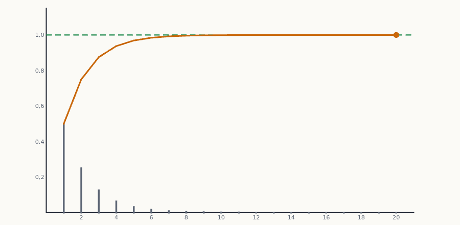

Cómo dar sentido a una suma con infinitos sumandos, cómo saber si «sale un número» (converge) o «se escapa» (diverge) y qué criterio usar en cada caso: geométricas, telescópicas, comparación, cociente, raíz, series $p$ y series alternadas.
Libro oficial: Cálculo para Ingenieros, §1.3 (pp. 33-41)Ejercicios: E Ej. 1.17–1.22 (pp. 20-25)⏱ ~6 h de estudio
U oficial
S Stewart
L Larson
E ejercicios
X exámenes
P propio
— pasa el ratón (o toca) por cada etiqueta para ver libro y página; en pantallas anchas aparecen en el margen derecho.
La idea del tema en una frase
No se pueden sumar infinitos números uno a uno, pero sí los $n$ primeros. Una serie es lo que ocurre con esas sumas finitas cuando $n$ crece: si se acercan a un número, la serie «suma» ese número; si no, la serie diverge. Todo el tema es una colección de herramientas para decidir cuál de las dos cosas pasa.
Si solo tienes un rato, llévate esto. El resto de la página lo desarrolla con ejemplos y ejercicios.
Método en 4 pasos
Calcula $\lim_{n\to\infty}a_n$. Si no es $0$ (o no existe), la serie diverge y has terminado. Si es $0$, todavía no sabes nada.
Nombra la forma del término: geométrica $ar^n$, telescópica $b_n-b_{n+1}$, tipo $\frac1{n^\gamma}$, factoriales o potencias $n$-ésimas, o con signos.
Elige el criterio según esa forma (lista de abajo) y escribe sus hipótesis: comparación, cociente y raíz piden $a_n\ge0$; Leibniz pide $|a_n|$ decreciente y $a_n\to0$.
Termina con una frase que responda a lo pedido: converge o diverge (y su suma, si es geométrica o telescópica; absoluta o condicional, si hay signos).
Qué hago según el tipo
¿Es $a\,r^n$? $\to$ geométrica: converge si $|r|<1$ y suma $\frac{\text{1.er término}}{1-r}$.
¿Se cancela en cadena ($b_n-b_{n+1}$, fracciones simples)? $\to$ telescópica: $s_n=b_1-b_{n+1}$ y se pasa al límite.
¿Se parece a $\frac C{n^\gamma}$ (potencias de $n$, con «ruido» acotado)? $\to$ comparación con $\sum\frac1{n^\gamma}$: mayorar si converge ($\gamma>1$), minorar si diverge ($\gamma\le1$).
¿Hay $n!$, $a^n$, $n^n$ o un producto que se alarga? $\to$ cociente $\frac{a_{n+1}}{a_n}$.
¿Es una potencia $n$-ésima, $(\cdots)^n$ o con exponente $n^2$? $\to$ raíz $\sqrt[n]{a_n}$ (con logaritmos si queda $x_n^{y_n}$).
¿Lleva $(-1)^n$ u otros signos? $\to$ primero $\sum|a_n|$; si no converge y es alternada, Leibniz.
¿Cociente o raíz dan $\ell=1$? $\to$ no decide: vuelve a la comparación o mira si $a_n\to0$.
$\sum|a_n|$ converge $\Rightarrow\sum a_n$ converge (Prop. 1.8, U p.40)
Series con signos: probar primero la absoluta.
Alternada con $\{|a_n|\}$ decreciente: converge $\iff a_n\to0$ (Leibniz, U p.41)
Cuando $\sum|a_n|$ diverge; converge condicionalmente.
Qué cae
En los exámenes resueltos hay 6 preguntas de este tema (alrededor del 2 % de todas), casi siempre cortas, de 1 punto: el criterio del cociente (también cuando no decide), convergencia absoluta y Leibniz, y preguntas de teoría (definir serie alternada, un test sobre $\sum a_n$ convergente). En el libro de ejercicios son E 1.17-1.22. Tabla por tipo: pestaña Examen.
U pp.34-41P
Camino de estudio: elige tu nivel
Empieza por «Mínimo»; luego «Completo» y, para nota alta, «Reto». Marca cada ejercicio al terminarlo.
La geométrica y la telescópica (2), la condición necesaria (3), la comparación (4), cociente y raíz (5) y absoluta y Leibniz (6), con el mapa de decisión.
Límites de sucesiones (tema 1.2): álgebra de límites (U Prop. 1.3, p.26), recta ampliada e indeterminaciones (U pp.27-30), toda sucesión monótona y acotada converge (U Teorema 1.3, p.31), el límite $(1+\tfrac1{a_n})^{a_n}\to e$ (U Prop. 1.5, p.31) y el criterio de Stolz (U p.32). Haber asimilado las secciones anteriores «es indispensable para poder seguir esta sección». U p.34
Manejo del símbolo $\sum$: $\sum_{i=1}^{n}a_i=a_1+\dots+a_n$ (el índice $i$ solo «recorre» los términos). U p.34
Desigualdades y valor absoluto (tema 1.1): cómo se invierte una desigualdad al pasar a inversos y cómo se acota un cociente.
Mapa del tema: qué se pide en los ejercicios y en el examen
Los seis ejercicios de E de este tema piden: (1) razonar sobre series en general y dar un contraejemplo (1.17); (2) estudiar el carácter (converge o diverge) de una serie concreta eligiendo el criterio adecuado: comparación (1.18, 1.19), cociente (1.20), raíz (1.21) y Leibniz / convergencia absoluta (1.22); y (3) elegir entre «convergente», «absolutamente convergente», «divergente», «alternada» (1.18). E pp.20-25
1Serie, suma parcial y convergencia U pp.34-35
Lo que vas a aprender. qué es una serie, su suma parcial $s_n$ y cuándo decimos que converge (tiene suma) o diverge.
Idea intuitiva
U empieza con una pregunta: hoy te doy 1 euro, mañana medio, pasado un cuarto, y así cada día la mitad del anterior; ¿cuánto dinero necesito en total? Y si doy 1, $\tfrac12$, $\tfrac13$, $\tfrac14$, …, ¿cuánto? No puedes «terminar» la suma, pero sí calcular lo que has pagado hasta el día $n$. Si esas cantidades se acercan a una cifra fija, ese es el coste total; si crecen sin parar, no hay presupuesto que alcance. Otra imagen: recorrer un pasillo dando pasos cada vez más cortos; si los pasos se acortan lo bastante, te acercas a una pared; si no, el pasillo es infinito para ti.
U p.33P
Definición 1.14 y 1.15: serie, sumas parciales, convergente
Dada una sucesión $\{a_n\}$, su sucesión de sumas parciales es $\{s_n\}$ con
$$s_1=a_1,\quad s_2=a_1+a_2,\quad \dots,\quad s_n=\sum_{i=1}^{n}a_i=a_1+a_2+\dots+a_n .$$
La pareja $(\{a_n\},\{s_n\})$ es una serie (Def. 1.14), que se escribe $\sum_{n=1}^{\infty}a_n$; los $a_n$ son sus términos.
La serie es convergente (o sumable) si $\{s_n\}$ es una sucesión convergente; entonces $\lim_{n\to\infty}s_n$ es la suma de la serie y se escribe $\sum_{n=1}^{\infty}a_n=\lim_{n\to\infty}s_n$ (Def. 1.15). Si $\{s_n\}$ no converge, la serie es divergente (no es sumable).
U pp.34-35S pp.703-705L p.595
Observaciones que se usan constantemente
Abuso de notación. $\sum a_n$ designa tanto la serie (que puede converger o no) como su suma (un número, si existe). El contexto aclara cuál. U p.35
Índice inicial. Se puede empezar en cualquier $n=p\in\mathbb Z$: $\sum_{n=p}^{\infty}a_n$ (por ejemplo desde $n=0$ o $n=2$). U p.35
«Divergente» significa «no convergente»: $s_n\to+\infty$, $s_n\to-\infty$ u oscilar sin límite. Estudiar el carácter de una serie es decidir si converge o diverge. U pp.35-39
Quitar o añadir un número finito de términos no cambia el carácter (sí puede cambiar la suma): las sumas parciales solo se desplazan una constante. P

Interactivo propio. Las barras grises son los términos $a_n$ y la curva naranja son las sumas parciales $s_n=a_1+\dots+a_n$. Si la serie converge, $s_n$ se acerca a la línea verde (su suma); si diverge, $s_n$ sigue creciendo. Compara la armónica $\sum\frac1n$ y $\sum\frac1{n^2}$: en las dos $a_n\to0$, pero solo la segunda converge, así que «$a_n\to0$» no basta. Aumenta los términos con el deslizador para ver el comportamiento a largo plazo. P
Ejemplos (U 1.31 y 1.32): calcular $s_n$
Serie constante. Con $a_n=1$: $s_1=1$, $s_2=2$, …, $s_n=n$. La sucesión $\{n\}$ no converge: la serie diverge. U p.35
Serie aritmética $\sum n$. $s_n=1+2+\dots+n$. Escribimos la suma al revés, $s_n=n+(n-1)+\dots+1$, y sumamos en columnas: cada pareja vale $n+1$ y hay $n$ parejas, así que $2s_n=n(n+1)$ y
$$s_n=\frac{n(n+1)}2 .$$
Como $s_n\to+\infty$, la serie es divergente. U pp.35-36
Error típico
Confundir la sucesión $\{a_n\}$ (lista los términos) con la serie $\sum a_n$ (estudia las sumas acumuladas $\{s_n\}$): $a_n\to0$ no implica que $\sum a_n$ converja (apartado 3).
2Dos series que se saben sumar exactamente: geométrica y telescópica U p.36
Lo que vas a aprender. sumar exactamente dos tipos de series: la geométrica $\sum ar^n$ y la telescópica (términos que se cancelan en cadena).
Idea intuitiva
Hay pocas series para las que se puede escribir una fórmula de $s_n$. La geométrica es la reina: cada término es el anterior multiplicado por la misma razón $r$. Si $|r|<1$ los términos se encogen tan deprisa que la suma total es finita (como el dinero del principio: $1+\tfrac12+\tfrac14+\dots=2$). Si $|r|\ge1$ los términos no se encogen y la suma se dispara u oscila.
Serie geométrica (Ejemplo 1.33)
Sea $r\neq1$. Las sumas parciales de $\sum_{n=1}^{\infty}r^n$ son $s_n=r+r^2+\dots+r^n$. Multiplicando por $r$: $rs_n=r^2+\dots+r^{n+1}$, y restando casi todo se cancela:
$$(1-r)\,s_n=r-r^{n+1}\quad\Longrightarrow\quad s_n=\frac{r-r^{n+1}}{1-r}.$$
Si $|r|<1$, entonces $r^{n+1}\to0$ y $s_n\to\dfrac r{1-r}$. Si $|r|\ge1$, $\{s_n\}$ no converge: para $r=1$, $s_n=n\to\infty$; para $r=-1$, $s_n$ vale alternativamente $-1$ y $0$; y en general $r^n\not\to0$, así que además falla la condición necesaria del apartado 3. El número $r$ es la razón.
Generalización: para $a\neq0$ y $k\in\mathbb Z$, la serie $\sum_{n=k}^{\infty}a\,r^n$ es sumable si y solo si $|r|<1$, y entonces
$$\sum_{n=k}^{\infty}a\,r^n=\frac{a\,r^k}{1-r}=\frac{\text{primer término}}{1-\text{razón}} .$$
U p.36S p.706L p.597
Ejemplos con geométricas
El euro de la motivación. $1+\tfrac12+\tfrac14+\dots=\sum_{n=0}^{\infty}\big(\tfrac12\big)^n$: primer término $1$, razón $\tfrac12$, suma $\dfrac1{1-1/2}=2$ euros. La otra propuesta, $1+\tfrac12+\tfrac13+\dots$, es la armónica: no tiene suma (apartado 3). U pp.33,36
$0{,}999\ldots=\sum_{n\ge1}\dfrac9{10^n}$: primer término $\tfrac9{10}$, razón $\tfrac1{10}$, suma $\dfrac{9/10}{9/10}=1$. Es decir, $0{,}999\ldots=1$ exactamente. P
Sumas parciales $s_n=1+\frac12+\dots+\frac1{2^n}=2-\frac1{2^n}$ del euro de la motivación: suben hacia la recta $y=2$ (la suma de la serie) sin alcanzarla. Pasa el ratón por la gráfica (o toca; o usa ← →) para leer las coordenadas. P
Series telescópicas S pp.707-708
Idea intuitiva
Un telescopio se pliega: al sumar, cada término «se come» parte del siguiente y casi todo se cancela; quedan solo el primer y el último trozo. Ocurre cuando el término general es una diferencia $a_n=b_n-b_{n+1}$.
P
Serie telescópica
Si $a_n=b_n-b_{n+1}$ para todo $n\ge1$, entonces
$$s_n=(b_1-b_2)+(b_2-b_3)+\dots+(b_n-b_{n+1})=b_1-b_{n+1}.$$
Por tanto $\sum a_n$ converge si y solo si $\{b_n\}$ converge, y entonces la suma es $b_1-\lim_{n\to\infty}b_n$.
S pp.707-708L pp.596-597
Ejemplos telescópicos (propios, verificados)
Converge. $\displaystyle\sum_{n\ge1}\frac1{n(n+1)}$ (truco: si el término es una fracción con denominador factorizable, prueba fracciones simples y escribe $s_1,s_2,s_3$ para ver las cancelaciones). Descomponemos: $\dfrac1{n(n+1)}=\dfrac1n-\dfrac1{n+1}$. Así $s_n=\big(1-\tfrac12\big)+\big(\tfrac12-\tfrac13\big)+\dots+\big(\tfrac1n-\tfrac1{n+1}\big)=1-\dfrac1{n+1}\to1$. Suma $=1$.
Diverge. $\displaystyle\sum_{n\ge1}\ln\!\Big(1+\frac1n\Big)=\sum_{n\ge1}\big(\ln(n+1)-\ln n\big)$. Aquí $s_n=\ln(n+1)-\ln1=\ln(n+1)\to+\infty$: no toda telescópica converge, depende de si $\{b_n\}$ converge.
S Ej. 7 pp.707-708
Converge. Sumas parciales $s_n=1-\frac1{n+1}=\frac n{n+1}$ de $\sum\frac1{n(n+1)}$: suben hacia la recta $y=1$, la suma de la serie. Pasa el ratón por la gráfica (o toca; o usa ← →) para leer las coordenadas. PDiverge. Sumas parciales $s_n=\ln(n+1)$ de $\sum\ln\left(1+\frac1n\right)$: crecen sin parar (despacio, pero sin techo); la curva une los puntos. Pasa el ratón por la gráfica (o toca; o usa ← →) para leer las coordenadas. P
3Condición necesaria, serie armónica y linealidad U pp.36-37
Lo que vas a aprender. el primer filtro de cualquier serie (si el término no tiende a $0$, diverge), por qué el recíproco falla (la armónica) y cuándo se puede partir una serie en dos.
Idea intuitiva
Si sumas infinitos números y quieres que el total no se escape, los sumandos tienen que ir haciéndose diminutos: si siguieras sumando cosas de tamaño fijo (por ejemplo $\tfrac12$ una y otra vez), el total crecería sin límite. Pero ojo: hacerse pequeños no basta. Añadir $\tfrac1n$ cada vez es muy poco, y aun así se acaba superando cualquier cifra, aunque muy despacio.
Proposición 1.6 (condición necesaria) y su uso para divergencia
Si $\sum_{n=1}^{\infty}a_n$ es convergente, entonces $\lim_{n\to\infty}a_n=0$.
Por qué: $a_n=s_n-s_{n-1}$ y, si $s_n\to L$, también $s_{n-1}\to L$, luego $a_n\to L-L=0$ (Larson, Teor. 9.8).
Uso práctico (contrarrecíproco). Si $a_n\not\to0$ (el límite no existe o es distinto de $0$), la serie diverge. Es el «criterio del término $n$-ésimo para la divergencia» (S, L).
U p.36S p.709L p.599
Ejemplo (U 1.34)
$\sum\dfrac n{n+1}$: como $\dfrac n{n+1}\to1\neq0$, diverge. $\sum(-1)^n$: $(-1)^n$ no tiene límite, luego no tiende a $0$ y diverge.
U p.37
Error típico: el recíproco es falso
«$a_n\to0$ $\Rightarrow$ la serie converge» es falso. Contraejemplo, la serie armónica $\sum\frac1n$ (Ejemplo 1.35). Sus sumas parciales cumplen $s_1=1$, $s_2=1+\tfrac12$ y, en general,
$$s_{2n}-s_n=\frac1{n+1}+\dots+\frac1{2n}\ge n\cdot\frac1{2n}=\frac12\quad\Longrightarrow\quad s_{2n}\ge s_n+\frac12$$
(la desigualdad es estricta para $n\ge2$). Si $s_n\to l$, entonces también $s_{2n}\to l$ y pasando al límite $l\ge l+\tfrac12$: absurdo. Luego $\{s_n\}$ no converge. Como es creciente y no converge, no está acotada (Teorema 1.3, U p.31); y una sucesión creciente no acotada superiormente supera cualquier $M$ y, al ser creciente, ya no baja de él: por tanto $s_n\to+\infty$. (De la desigualdad se deduce que $s_{2^k}\ge1+\tfrac k2$: crece, pero muy despacio, como un logaritmo.)
U p.37
Proposición 1.7 (linealidad)
Si $\sum a_n$ y $\sum b_n$ son sumables y $c\in\mathbb R$, entonces $\sum(a_n+b_n)$ y $\sum c\,a_n$ son sumables y
$$\sum(a_n+b_n)=\sum a_n+\sum b_n,\qquad \sum c\,a_n=c\sum a_n .$$
U p.37L p.599
Qué se puede y qué no se puede decir al sumar series
Convergente + divergente = divergente. Si $\sum(a_n+b_n)$ convergiera y $\sum a_n$ también, por la Prop. 1.7 $\sum\big[(a_n+b_n)+(-1)a_n\big]=\sum b_n$ convergería. Contradicción. Ejemplo: $\sum\big(\frac1{2^n}+\frac1n\big)$ diverge. L p.604
Divergente + divergente: no se sabe. Puede converger: con $a_n=\frac1n$ y $b_n=-\frac1n$ la suma tiene todos los términos $0$ (es el Ejercicio 1.17). S p.713
4Series de términos no negativos: comparación y series $p$ U p.38
Lo que vas a aprender. comparar una serie de términos positivos con otra conocida, en el sentido correcto, y usar la serie $\sum\frac1{n^\gamma}$ como referencia.
Idea intuitiva
Cuando todos los términos son $\ge0$, las sumas parciales nunca bajan: $\{s_n\}$ es creciente. Y una sucesión creciente converge si y solo si está acotada (Teorema 1.3, U p.31). Entonces la pregunta se reduce a: ¿las sumas se quedan por debajo de algún techo? La comparación consiste en usar como techo las sumas de otra serie que ya conocemos. Analogía: si cada mes cobras menos que tu vecino y el total que cobra el vecino es finito, el tuyo también lo es; y si tú cobras más que un vecino cuyo total es infinito, el tuyo lo es también.
U p.31S pp.722-723
Criterio de comparación (U p.38)
Sean $\sum a_n$ y $\sum b_n$ series de términos no negativos ($a_n\ge0$, $b_n\ge0$) y supongamos que existe $n_0$ con $a_n\le b_n$ para todo $n\ge n_0$.
Si $\sum b_n$ es convergente, entonces $\sum a_n$ es convergente («la mayor converge, la menor también»).
Si $\sum a_n$ no es convergente, entonces $\sum b_n$ no es convergente («la menor diverge, la mayor también»).
U p.38S p.722L p.612
La dirección importa (la trampa más frecuente)
Sabes que…
y además…
¿Conclusión?
$0\le a_n\le b_n$
$\sum b_n$ converge
$\sum a_n$ converge
$0\le a_n\le b_n$
$\sum b_n$ diverge
nada (no concluye)
$0\le a_n\le b_n$
$\sum a_n$ diverge
$\sum b_n$ diverge
$0\le a_n\le b_n$
$\sum a_n$ converge
nada (no concluye)
Regla: para probar convergencia, mayora ($a_n\le$ algo convergente); para probar divergencia, minora ($a_n\ge$ algo divergente). Y solo vale con términos $\ge0$. La desigualdad se establece término a término, nunca entre las sumas antes de saber si son finitas.
Ejemplo (U 1.36)
$\displaystyle\sum_{n\ge1}\frac{\cos^2 n}{2^n}$. Los términos son $\ge0$ (un cuadrado). Como $0\le\cos^2n\le1$, para $n\ge1$: $\dfrac{\cos^2n}{2^n}\le\dfrac1{2^n}$. La serie $\sum(\tfrac12)^n$ es geométrica de razón $\tfrac12$, convergente. Por el criterio de comparación, la serie dada converge.
U p.39
Los términos $\frac{\cos^2n}{2^n}$ (puntos) quedan siempre por debajo de los de la geométrica $\frac1{2^n}$ (curva de puntos): $0\le\frac{\cos^2n}{2^n}\le\frac1{2^n}$. Pasa el ratón por la gráfica (o toca; o usa ← →) para leer las coordenadas. P
Las series de referencia: geométrica y series $p$
Series con las que comparar (U p.38)
$\sum\dfrac1{n^2}$ es convergente y su suma es $\dfrac{\pi^2}6$.
$\sum\dfrac1{n^\gamma}$ (serie $p$, con $p=\gamma$) es convergente si y solo si $\gamma>1$. Casos: $\gamma=1$ es la armónica (diverge); $\gamma=\tfrac12$ ($\sum\frac1{\sqrt n}$) diverge; $\gamma=\tfrac32$ y $\gamma=2$ convergen.
La geométrica $\sum r^n$: converge si y solo si $|r|<1$ (apartado 2).
U p.38S p.717L p.607
Fuera de examen: por qué las series $p$ convergen si $\gamma>1$ (criterio de la integral)
Por qué las series $p$ convergen si $\gamma>1$: comparar áreas
Nota: el criterio de la integral no entra en el examen (las integrales impropias son del Tema 6); aquí solo da intuición. La parte elemental: si $\gamma\le1$, entonces $n^\gamma\le n$, luego $\frac1{n^\gamma}\ge\frac1n$ y la serie diverge por comparación con la armónica. Si $\gamma>1$, agrupando en bloques $2^j\le n<2^{j+1}$ (con $2^j$ términos, cada uno $\le\frac1{2^{j\gamma}}$): $s_{2^k-1}\le\sum_{j=0}^{k-1}\big(2^{1-\gamma}\big)^j<\dfrac1{1-2^{1-\gamma}}$; las sumas parciales están acotadas y crecen, luego convergen.
Un término $\frac1{n^\gamma}$ es el área de un rectángulo de base $1$ y altura $\frac1{n^\gamma}$. Y la función $f(x)=\frac1{x^\gamma}$ es positiva y decreciente, así que los rectángulos se pueden colocar por encima o por debajo de su gráfica, y sumar rectángulos es comparar con la integral $\int f$. Es el criterio de la integral (S §11.3, L Teor. 9.10): si $f$ es positiva, continua y decreciente para $x\ge1$ y $a_n=f(n)$, entonces $\sum a_n$ y $\int_1^\infty f(x)\,dx$ convergen ambas o divergen ambas.
Izquierda: los rectángulos de base $[n,n+1]$ y altura $\frac1n$ están por encima de $y=\frac1x$; su área $s_n$ es al menos $\int_1^{n+1}\frac{dx}x=\ln(n+1)$, que tiende a $\infty$: la armónica diverge. Derecha: los rectángulos de base $[n-1,n]$ y altura $\frac1{n^2}$ están por debajo de $y=\frac1{x^2}$: $\sum_{n=2}^{N}\frac1{n^2}\le\int_1^N\frac{dx}{x^2}=1-\frac1N<1$; las sumas parciales están acotadas y son crecientes, así que $\sum\frac1{n^2}$ converge (y su suma es menor que $2$).
En general, $\int_1^\infty x^{-\gamma}dx$ converge si y solo si $\gamma>1$, y de ahí sale el resultado de U. (Los dos casos de la figura son la prueba completa para $\gamma=1$ y $\gamma=2$.)
S pp.714-716L p.605
Comparación por paso al límite
Criterio de comparación por el límite
Sean $a_n>0$, $b_n>0$ y $\displaystyle\lim_{n\to\infty}\frac{a_n}{b_n}=L$ con $L$ finito y $>0$. Entonces $\sum a_n$ y $\sum b_n$ tienen el mismo carácter (las dos convergen o las dos divergen).
Por qué: si $a_n/b_n\to L$, a partir de un $N$ es $0<a_n<(L+1)\,b_n$ y $b_n<\tfrac2L\,a_n$ (de $b_n/a_n\to\tfrac1L$); se aplica la comparación directa en cada sentido, más la Prop. 1.7 para las constantes.
Casos $L=0$ o $L=\infty$ (con $a_n,b_n>0$): si $L=0$, a partir de un $N$ es $a_n\le b_n$ y se aplica la comparación directa: $\sum b_n$ converge $\Rightarrow$ $\sum a_n$ converge (equivalentemente, $\sum a_n$ diverge $\Rightarrow$ $\sum b_n$ diverge). Si $\sum b_n$ diverge no se concluye nada sobre $\sum a_n$, ni sobre $\sum b_n$ si $\sum a_n$ converge. Si $L=\infty$ es $a_n\ge b_n$ desde un $N$ y todo va al revés: $\sum b_n$ diverge $\Rightarrow$ $\sum a_n$ diverge (y $\sum a_n$ converge $\Rightarrow$ $\sum b_n$ converge); nada en los otros casos.
S p.724; ejs. 40-41 p.727L p.614
Truco de examen: cómo elegir la serie con la que comparar
Si $a_n$ es cociente de expresiones con potencias de $n$ (raíces incluidas), conserva en cada sitio el término de mayor exponente: $a_n\approx C/n^{\gamma}$ con $\gamma=(\text{exponente del denominador})-(\text{exponente del numerador})$ (ejemplo con comparación por el límite: Ejercicio 1.19). Si $\gamma>1$, sospecha convergencia y mayora; si $\gamma\le1$, sospecha divergencia y minora. Los términos acotados («ruido») como $\cos n$ o $3+\sin n$ se sustituyen por sus cotas.
P
5Criterios del cociente y de la raíz U pp.38-40
Lo que vas a aprender. cuándo elegir el criterio del cociente y cuándo el de la raíz, y qué hacer cuando sale $\ell=1$.
Idea intuitiva
Una serie geométrica $\sum r^n$ es aquella en la que cada término es $r$ veces el anterior: el cociente $a_{n+1}/a_n$ vale siempre $r$, y converge cuando ese factor es menor que $1$ (cada término es una fracción del anterior). Los criterios del cociente y de la raíz preguntan: «¿a la larga esta serie se comporta como una geométrica de razón menor que 1?». El cociente mide el factor de un término al siguiente; la raíz $n$-ésima mide el factor «medio» por paso ($a_n\approx\ell^n$).
S p.734
Criterio del cociente y criterio de la raíz (U p.38)
Cociente. Sea $a_n>0$ para todo $n$ y supongamos que existe $\displaystyle\lim_{n\to\infty}\frac{a_{n+1}}{a_n}=\ell$. Raíz. Sea $a_n>0$ y supongamos que existe $\displaystyle\lim_{n\to\infty}\sqrt[n]{a_n}=\ell$. En ambos casos:
Si $\ell\in[0,1)$, la serie $\sum a_n$ converge.
Si $\ell\in(1,\infty]$, la serie no converge (diverge).
Si $\ell=1$, el criterio no decide.
U p.38S pp.734,736L pp.627,630
Ejemplo (U 1.37): cociente
$\displaystyle\sum\frac n{3^n}$. Con $a_n=\dfrac n{3^n}>0$: $\dfrac{a_{n+1}}{a_n}=\dfrac{(n+1)/3^{n+1}}{n/3^n}=\dfrac{n+1}{3n}\to\dfrac13<1$. La serie converge.
U p.39
Ejemplo (U 1.38): raíz
$\displaystyle\sum\big(\sqrt[n]n-1\big)^n$, sabiendo que $\lim_{n\to\infty}\sqrt[n]n=1$. Con $a_n=(\sqrt[n]n-1)^n\ge0$: $\sqrt[n]{a_n}=\sqrt[n]n-1\to1-1=0<1$. La serie converge. (Aquí $\sqrt[n]{a_n}$ se simplifica sola porque $a_n$ es una potencia $n$-ésima; el cociente sería un lío.)
U pp.39-40
Errores típicos
$\ell=1$ no dice nada. Ejemplos: $\sum\frac1n$ (diverge) y $\sum\frac1{n^2}$ (converge) dan ambos $\ell=1$. En particular, cociente y raíz nunca deciden una serie $p$ (S/L lo comentan). Ante $\ell=1$, pasa a comparación o a series $p$.
Cociente: exige $a_n>0$ (si no, se divide por $0$); la raíz funciona también con $a_n\ge0$. En U Ej. 1.38 el primer término es $a_1=(1-1)^1=0$: en rigor se quita ese término (no cambia el carácter) o se usa la raíz con $a_n\ge0$. Solo valen para términos no negativos (U p.39). Si los términos tienen signo, se aplican a $|a_n|$ y entonces se concluye convergencia absoluta (versión de S p.734 y L p.627; se explica en el apartado 6).
Escribir mal $a_{n+1}$: hay que sustituir $n$ por $n+1$ en todos los sitios (también en el número de factores de un producto).
Leer $\ell>1$ como «converge a algo grande». Significa que diverge.
Tomar $\dfrac{a_n}{a_{n+1}}$ (el inverso) y leer las conclusiones al revés.
Truco de examen: ¿cociente o raíz?
U avisa: «si el criterio del cociente decide, el de la raíz también». Elección práctica: factoriales, potencias $a^n$ y productos que «se alargan» un factor por paso ($n!$, $1\cdot3\cdots(2n-1)$) $\Rightarrow$ cociente; términos que son una potencia $n$-ésima $(\cdots)^n$ o llevan $n$ en un exponente ($n^{\ln n}/(\ln n)^n$) $\Rightarrow$ raíz. Antes de nada, comprueba que $a_n\to0$: si no, ya diverge (apartado 3). La comparación es el criterio más general (U p.39) (los otros dos se deducen de ella), aunque es menos cómoda de usar.
U p.39
6Series con términos de signo variable: absoluta, alternada y Leibniz U pp.40-41
Lo que vas a aprender. qué cambia cuando los términos tienen signo: convergencia absoluta, series alternadas, criterio de Leibniz y convergencia condicional.
Idea intuitiva
Si los términos cambian de signo, las sumas parciales unas veces suben y otras bajan, y las cancelaciones ayudan a que la serie converja: una serie con signos es «más fácil de sumar» que la de los mismos términos en positivo. Ese es el sentido de la convergencia absoluta: si la serie converge incluso cuando se ponen todos los términos en positivo ($\sum|a_n|$), converge sin necesitar ninguna cancelación (y desde luego converge). Las alternadas convergen a veces gracias precisamente a la cancelación entre un paso adelante y otro atrás.
U p.40
Convergencia absoluta
Definición 1.16 y Proposición 1.8
La serie $\sum a_n$ es absolutamente convergente si $\sum|a_n|$ es convergente.
Proposición 1.8. Si $\sum a_n$ es absolutamente convergente, entonces es convergente y $\left|\sum_{n=1}^{\infty}a_n\right|\le\sum_{n=1}^{\infty}|a_n|$.
Idea de la prueba (Larson, Teor. 9.16): $0\le a_n+|a_n|\le2|a_n|$, así que $\sum(a_n+|a_n|)$ converge por comparación; y $a_n=(a_n+|a_n|)-|a_n|$ es diferencia de dos series convergentes (Prop. 1.7).
U p.40S p.733L p.622
Ejemplo (U 1.39)
$\displaystyle\sum\frac{\cos n}{n^2}$. Los términos cambian de signo, así que los criterios del apartado 4 y 5 no se aplican a la serie; sí a la de valores absolutos: $\left|\dfrac{\cos n}{n^2}\right|\le\dfrac1{n^2}$ y $\sum\frac1{n^2}$ converge, luego $\sum\left|\frac{\cos n}{n^2}\right|$ converge: la serie es absolutamente convergente y, por la Prop. 1.8, convergente.
U pp.40-41
Términos no positivos
Si todos los $a_n\le0$, entonces $\sum a_n=-\sum|a_n|$, y la serie de la derecha tiene términos $\ge0$: se estudia con los criterios del apartado 4 y 5.
U p.40
Series alternadas y criterio de Leibniz
Definición 1.17 (serie alternada)
Una serie es alternada si sus términos son alternativamente positivos (o nulos) y negativos (o nulos). Ejemplo (U 1.40): $\sum(-1)^n$. Es habitual escribirla como $\sum(-1)^nc_n$ o $\sum(-1)^{n-1}c_n$ con $c_n\ge0$.
U p.41S p.727L p.619
Criterio de Leibniz (U p.41)
Sea $\sum a_n$ una serie alternada tal que la sucesión $\{|a_n|\}$ es decreciente. Entonces la serie es convergente si y solo si $\lim_{n\to\infty}a_n=0$.
Versión de S/L (equivalente para $c_n=|a_n|>0$): si $c_n\ge c_{n+1}$ y $c_n\to0$, entonces $\sum(-1)^{n}c_n$ y $\sum(-1)^{n-1}c_n$ convergen. El decrecimiento basta que se cumpla a partir de un $N$.
U p.41S p.727L p.619
Por qué funciona Leibniz (mirando las sumas parciales)
Caminas a lo largo de una recta: das un paso adelante de longitud $c_1$, uno atrás de longitud $c_2\le c_1$, uno adelante de $c_3\le c_2$… Como cada paso atrás es más corto que el anterior paso adelante, nunca retrocedes más de lo que avanzaste; las posiciones pares $s_{2},s_4,\dots$ van subiendo, las impares $s_1,s_3,\dots$ van bajando, y la distancia entre una y otra es un solo paso $c_n\to0$: acaban atrapando un mismo número.
Sumas parciales de $\sum(-1)^{n-1}/n$ (armónica alternada): zigzag cada vez más estrecho alrededor de $\ln2\approx0{,}693$, que es su suma (S p.729). Cada suma parcial dista de la suma como mucho el primer término omitido ($\le$; L Teor. 9.15, p.621).S pp.727-729L pp.619-621
Ejemplo (U 1.41)
$\displaystyle\sum\frac{(-1)^n}n$. No es absolutamente convergente: $\sum\left|\frac{(-1)^n}n\right|=\sum\frac1n$ es la armónica, que no converge. Sí converge: es alternada, $\left\{\frac1n\right\}$ es decreciente y $\frac{(-1)^n}n\to0$; por Leibniz, converge.
U p.41
Convergencia condicional
Una serie es condicionalmente convergente si converge pero no converge absolutamente. Resumen: dada $\sum a_n$, estudia $\sum|a_n|$; si converge, absolutamente convergente (y por tanto convergente). Si no, mira si $\sum a_n$ converge (Leibniz u otro método): si sí, condicionalmente convergente; si no, divergente. Por eso el ejemplo 1.41 es condicional. (Una serie condicionalmente convergente puede reordenarse para obtener otra suma distinta; L p.624, Ej. 8.)
S p.733L pp.622-623
Errores típicos
Leibniz sin comprobar el decrecimiento. Que $|a_n|\to0$ no basta: en el ejemplo propio 3b la serie es alternada, con término $\to0$, pero $|a_n|$ no decrece y diverge.
Pensar que alternada $\Rightarrow$ convergente. $\sum(-1)^n$ es alternada y diverge (el término no tiende a $0$).
Usar comparación, cociente o raíz directamente en una serie con signos. Son solo para términos no negativos: hay que pasar a $|a_n|$. Y un $\cos n$ no hace «alternada» a una serie: la alternada tiene signos $+,-,+,-$ (E Ej. 1.18).
7Mapa de decisión: «¿qué criterio uso?» S pp.739-740P
Lo que vas a aprender. a reconocer, en cuanto lees la serie, qué criterio usar (mapa de decisión y, desplegable, cuadro con el detalle de cada caso).
Idea
No hay un criterio universal: elegir bien es la mitad del problema. Sigue el mapa de decisión y, si quieres el detalle de cada caso, abre el cuadro «Si ves… haz…».
S pp.739-740L p.631
Léelo de arriba abajo: en cada pregunta, «no» baja a la siguiente y «sí» te lleva a la acción de la derecha. Antes de nada, calcula $\lim_{n\to\infty}a_n$ (Prop. 1.6): si no es $0$, ya has acabado.
Ver el cuadro «Si ves… haz…» con los ejercicios de cada caso
¿$a_n\to0$? Si no (o el límite no existe): diverge y has terminado (Prop. 1.6). Si sí, no sabes nada todavía.
¿Es un tipo conocido: geométrica, serie $p$ o telescópica? Se resuelve directamente.
¿Son los términos $\ge0$ y con factoriales, potencias $n$-ésimas o productos que se alargan? Cociente o raíz.
¿Se parece a una serie de referencia (dominante $C/n^\gamma$)? Comparación (directa o por el límite).
¿Tiene signos? Estudia $\sum|a_n|$ primero; si no converge y es alternada, Leibniz.
¿Cociente o raíz dan $\ell=1$? Vuelve a 4 (comparación con series $p$) o al criterio de la integral (S/L, fuera de U).
S pp.739-740L p.631
P Tabla elaborada a partir de los criterios de U (pp. 36-41) y de las estrategias de S (pp. 739-740) y L (p. 631).
8Practica P
Lo que vas a aprender. a resolver tú solo un ejemplo de cada tipo. Intenta cada uno antes de abrir la pista; empieza por los ★ (los ★★ son ampliación).
Ahora hazlo tú
Antes de elegir criterio, haz siempre dos preguntas: ¿el término tiende a $0$? (si no, diverge) y ¿tiene signo constante? (si no, mira primero $\sum|a_n|$). Después, la forma del término elige el criterio.
Serie geométrica: primer término y razón
★ Básico Práctica a1 · geométrica que no empieza en 1 P
Estudia el carácter de $\displaystyle\sum_{n=2}^{\infty}\frac{2^{n+1}}{5^{n}}$ y, si converge, calcula su suma.
Pista
Escribe el término como $a\,r^n$ (con $2^{n+1}=2\cdot2^n$). La suma es $\frac{\text{primer término}}{1-\text{razón}}$, y el primer término es el de $n=2$, no el de $n=1$.
Ver solución
Reconocer la geométrica: $\frac{2^{n+1}}{5^n}=2\cdot\frac{2^n}{5^n}=2\left(\frac25\right)^n$. Cada término es el anterior multiplicado por la misma cantidad, la razón $r=\frac25$.
Carácter: $|r|=\frac25<1$, así que la serie converge (serie geométrica, U Ej. 1.33 y nota al margen, p.36).
Primer término (el de $n=2$): $\frac{2^{3}}{5^2}=\frac8{25}$.
Suma: $\dfrac{\text{primer término}}{1-r}=\dfrac{8/25}{1-2/5}=\dfrac{8/25}{3/5}=\dfrac{8}{25}\cdot\dfrac53=\dfrac8{15}$ (U p.36).
Error que se evita: usar como primer término el de $n=1$ ($\frac45$) daría $\frac43$, que es la suma desde $n=1$; el sumando $\frac45$ sobra.
Resultado: converge y su suma es $\frac8{15}$
★★ Medio Práctica a2 · suma de dos geométricas P
Calcula la suma de $\displaystyle\sum_{n=1}^{\infty}\frac{2^n+(-1)^n}{3^n}$.
Pista
Parte la fracción en dos series geométricas. Antes de sumarlas por separado, comprueba que las dos convergen: es lo que permite partir (U Prop. 1.7, p.37).
Primera serie: geométrica de razón $\frac23$ ($|r|<1$), primer término $\frac23$: $\displaystyle\sum_{n\ge1}\Big(\frac23\Big)^n=\frac{2/3}{1-2/3}=2$ (U p.36).
Segunda serie: geométrica de razón $-\frac13$ ($|r|=\frac13<1$), primer término $-\frac13$: $\displaystyle\sum_{n\ge1}\Big(-\frac13\Big)^n=\frac{-1/3}{1+1/3}=-\frac14$. La razón negativa no estorba: lo que cuenta es $|r|<1$.
Sumar: como las dos series son sumables, la Prop. 1.7 (U p.37) dice que su suma también lo es y que su suma es la suma de las sumas: $2+\left(-\frac14\right)=\frac74$.
Por qué hace falta el paso 4: partir una serie en dos solo es legítimo si las dos convergen; con dos divergentes podría salir cualquier cosa (E Ej. 1.17).
Resultado: $\frac74$
Serie telescópica: lo que se cancela
★ Básico Práctica b1 · fracciones simples con impares P
Calcula la suma de $\displaystyle\sum_{n=1}^{\infty}\frac{1}{(2n-1)(2n+1)}$.
Pista
Busca $A$ y $B$ con $\frac1{(2n-1)(2n+1)}=\frac A{2n-1}+\frac B{2n+1}$ y escribe $s_1,s_2,s_3$ para ver qué se cancela.
Ver solución
Fracciones simples: $1=A(2n+1)+B(2n-1)$. Con $n=\frac12$: $1=2A$, $A=\frac12$; con $n=-\frac12$: $1=-2B$, $B=-\frac12$. Así $$\frac1{(2n-1)(2n+1)}=\frac12\left(\frac1{2n-1}-\frac1{2n+1}\right).$$
Forma telescópica: con $b_n=\frac1{2(2n-1)}$ se tiene $b_{n+1}=\frac1{2(2n+1)}$ y el término es $a_n=b_n-b_{n+1}$.
Sumas parciales (se cancelan los de en medio): $s_n=(b_1-b_2)+(b_2-b_3)+\dots+(b_n-b_{n+1})=b_1-b_{n+1}=\frac12-\frac1{2(2n+1)}$.
Límite: $\frac1{2(2n+1)}\to0$, luego $s_n\to\frac12$. Por la definición de serie convergente (U Def. 1.15, p.35), la serie converge y su suma es $\frac12$.
Comprobación: $s_1=\frac13$, $s_2=\frac13+\frac1{15}=\frac25$, y la fórmula da $\frac12-\frac1{10}=\frac25$.
Resultado: $\frac12$
★★ Medio Práctica b2 · telescópica con logaritmos P
Calcula la suma de $\displaystyle\sum_{n=1}^{\infty}\ln\frac{n(n+2)}{(n+1)^2}$.
Pista
Reparte el cociente: $\frac{n(n+2)}{(n+1)^2}=\frac{n}{n+1}\cdot\frac{n+2}{n+1}$. Con $\ln(xy)=\ln x+\ln y$ aparece una diferencia $b_n-b_{n+1}$ con $b_n=\ln\frac n{n+1}$.
Ver solución
Partir el logaritmo: $\ln\frac{n(n+2)}{(n+1)^2}=\ln\frac{n}{n+1}+\ln\frac{n+2}{n+1}=\ln\frac{n}{n+1}-\ln\frac{n+1}{n+2}$ (porque $\ln\frac1x=-\ln x$).
Forma telescópica: con $b_n=\ln\frac n{n+1}$, el segundo sumando es $b_{n+1}=\ln\frac{n+1}{n+2}$, así que $a_n=b_n-b_{n+1}$.
Límite: $\frac{n+1}{n+2}\to1$ y $\ln$ es continua, así que $\ln\frac{n+1}{n+2}\to\ln1=0$ (cambiar límite por función continua, U p.29). Luego $s_n\to\ln\frac12=-\ln2$ y la serie converge (U Def. 1.15, p.35).
Contraste: todos los términos son negativos ($n(n+2)=n^2+2n<(n+1)^2$), y la suma también lo es: $-\ln2\approx-0{,}693$.
Resultado: $-\ln2$
Condición necesaria: ¿el término tiende a 0?
★ Básico Práctica c1 · el término no se anula P
Estudia el carácter de $\displaystyle\sum_{n=1}^{\infty}\frac{\sqrt{n^2+1}}{2n}$.
Pista
Antes de buscar un criterio, calcula $\lim_{n\to\infty}a_n$. Si no es $0$, ya has terminado.
Ver solución
Límite del término: dividiendo arriba y abajo entre $n$ (con $n=\sqrt{n^2}$): $\frac{\sqrt{n^2+1}}{2n}=\frac{\sqrt{1+1/n^2}}{2}\to\frac12$.
Condición necesaria (U Prop. 1.6, p.36): si la serie convergiera, su término tendría que tender a $0$. Como tiende a $\frac12\neq0$, la serie no converge.
Idea: a partir de cierto $n$ se suman cantidades cercanas a $\frac12$ una y otra vez; las sumas parciales crecen como $\frac n2$.
Resultado: diverge (el término tiende a $\frac12\neq0$)
★★ Medio Práctica c2 · base que tiende a 1 P
Estudia el carácter de $\displaystyle\sum_{n=3}^{\infty}\left(\frac{n-2}{n+1}\right)^{n}$.
Pista
La base es menor que $1$, pero tiende a $1$ y el exponente a $\infty$: es $1^\infty$, no tiende a $0$ porque sí. Calcula el límite del término con el número $e$ (U Prop. 1.5, p.31).
Ver solución
Trampa: «la base es menor que $1$, luego la potencia tiende a $0$» solo vale si la base tiende a un número menor que $1$. Aquí $\frac{n-2}{n+1}\to1$ y el exponente $n\to\infty$: indeterminación $1^\infty$ (U p.30).
Preparar la forma de $e$: $\frac{n-2}{n+1}=1-\frac3{n+1}=1+\frac1{x_n}$ con $x_n=-\frac{n+1}3\to-\infty$.
Usar la Prop. 1.5 (U p.31): $\left(1+\frac1{x_n}\right)^{x_n}\to e$. El término es $\left[\left(1+\frac1{x_n}\right)^{x_n}\right]^{n/x_n}$ con $\frac n{x_n}=-\frac{3n}{n+1}\to-3$. Por tanto $a_n\to e^{-3}$.
Condición necesaria (U Prop. 1.6, p.36): $e^{-3}\approx0{,}0498\neq0$, así que la serie diverge.
Comprobación: para $n=1000$, $\left(\frac{998}{1001}\right)^{1000}\approx0{,}0497$: los términos se estabilizan cerca de $0{,}05$ y no siguen bajando.
Resultado: diverge (el término tiende a $e^{-3}\neq0$)
Criterio de comparación
★ Básico Práctica d1 · mayorar por una geométrica P
Estudia el carácter de $\displaystyle\sum_{n=1}^{\infty}\frac{1}{3^n+n}$.
Pista
Quitar el $+n$ del denominador lo hace más pequeño, y por tanto la fracción más grande. Compara con una geométrica.
Ver solución
Tipo de serie: $a_n>0$; se puede usar comparación (U p.38).
Acotar: $3^n+n>3^n>0$; al invertir números positivos la desigualdad cambia de sentido: $0<\frac1{3^n+n}<\frac1{3^n}=\left(\frac13\right)^n$.
Serie mayor: $\sum\left(\frac13\right)^n$ es geométrica de razón $\frac13<1$: converge (con suma $\frac12$, U p.36).
Criterio de comparación (U p.38): si la mayor converge, la menor también. La serie converge.
Resultado: converge
★★ Medio Práctica d2 · $\ln n$ frente a $1$ y frente a $n$ P
Estudia el carácter de (a) $\displaystyle\sum_{n=2}^{\infty}\frac{\ln n}{n}$ y (b) $\displaystyle\sum_{n=2}^{\infty}\frac{\ln n}{n^3}$.
Pista
$\ln n$ crece, pero muy despacio: $\ln n\ge1$ desde $n=3$ y $\ln n<n$ siempre. Usa la primera cota para minorar en (a) y la segunda para mayorar en (b).
Ver solución
Tipo: para $n\ge2$, $\ln n>0$; las dos series tienen términos positivos y se puede usar comparación (U p.38), que solo exige la desigualdad a partir de un $n_0$.
(a) Cota inferior: para $n\ge3$ es $n>e$, y como $\ln$ es creciente, $\ln n>\ln e=1$. Entonces $\frac{\ln n}n\ge\frac1n$ para $n\ge3$.
(a) Conclusión: la armónica $\sum\frac1n$ diverge (U Ej. 1.35, p.37) y es la menor; por comparación (U p.38, primera parte con $n_0=3$), $\sum\frac{\ln n}n$ diverge. Aunque $\frac{\ln n}n\to0$, eso no basta.
(b) Cota superior: $e^n\ge2^n\ge n+1>n$ (la segunda desigualdad, por inducción: $2^{n+1}=2\cdot2^n\ge2n+2\ge n+2$); tomando $\ln$ (creciente), $n>\ln n$. Así $0<\frac{\ln n}{n^3}<\frac{n}{n^3}=\frac1{n^2}$.
(b) Conclusión: $\sum\frac1{n^2}$ converge (U p.38) y es la mayor; por comparación, $\sum\frac{\ln n}{n^3}$ converge (numéricamente $\approx0{,}198$).
Resultado: (a) diverge; (b) converge
Criterio del cociente
★ Básico Práctica e1 · factorial en el denominador P
Estudia el carácter de $\displaystyle\sum_{n=1}^{\infty}\frac{3^n}{n!}$.
Pista
Hay un factorial: usa el cociente. Recuerda que $(n+1)!=(n+1)\cdot n!$.
Ver solución
Tipo: $a_n=\frac{3^n}{n!}>0$; se puede usar el criterio del cociente (U p.38).
Límite: $\frac3{n+1}\to0$, es decir, $\ell=0\in[0,1)$.
Conclusión (U p.38): la serie converge. El factorial acaba ganando a cualquier potencia $3^n$: a partir de $n=3$ cada término es menor que el anterior y cada vez en mayor proporción.
Resultado: converge (el cociente tiende a $0$)
★★ Medio Práctica e2 · factorial y $n^n$ P
Estudia el carácter de $\displaystyle\sum_{n=1}^{\infty}\frac{2^n\,n!}{n^n}$.
Pista
Con el cociente quedan $\frac{n^n}{(n+1)^n}=\frac1{(1+1/n)^n}$, que tiende a $\frac1e$ (U Prop. 1.5, p.31). Compara el resultado con $1$ usando $e\approx2{,}718$.
Ver solución
Tipo: $a_n>0$; factorial y $n^n$ $\Rightarrow$ criterio del cociente (U p.38).
Cociente: $$\frac{a_{n+1}}{a_n}=\frac{2^{n+1}(n+1)!}{(n+1)^{n+1}}\cdot\frac{n^n}{2^n\,n!}=\frac{2\,(n+1)\,n^n}{(n+1)^{n+1}}=2\,\frac{n^n}{(n+1)^n}.$$ (Se usa $(n+1)!=(n+1)n!$ y $(n+1)^{n+1}=(n+1)(n+1)^n$.)
Forma de $e$: $\frac{n^n}{(n+1)^n}=\left(\frac{n}{n+1}\right)^n=\frac1{(1+\frac1n)^n}\to\frac1e$ (U Prop. 1.5, p.31).
Conclusión (U p.38): la serie converge. Con $3^n$ en lugar de $2^n$ saldría $\frac3e>1$ y la serie divergiría: el número $e$ es la frontera.
Resultado: converge (el cociente tiende a $\frac2e<1$)
Criterio de la raíz
★ Básico Práctica f1 · potencia $n$-ésima P
Estudia el carácter de $\displaystyle\sum_{n=1}^{\infty}\left(\frac{n}{2n+1}\right)^{n}$.
Pista
El término entero está elevado a $n$: la raíz $n$-ésima lo deshace.
Ver solución
Tipo: $a_n>0$; exponente $n$ $\Rightarrow$ criterio de la raíz (U p.38).
Raíz: $\sqrt[n]{a_n}=\frac{n}{2n+1}$ (la raíz $n$-ésima de un número positivo elevado a $n$ es el propio número).
Límite: $\frac{n}{2n+1}=\frac1{2+1/n}\to\frac12$, así que $\ell=\frac12\in[0,1)$.
Conclusión (U p.38): la serie converge. Aquí la base tiende a $\frac12$, no a $1$: los términos se parecen a $\left(\frac12\right)^n$, una geométrica convergente.
Resultado: converge (la raíz tiende a $\frac12$)
★★ Medio Práctica f2 · exponente $n^2$ P
Estudia el carácter de $\displaystyle\sum_{n=1}^{\infty}\frac1{3^n}\left(\frac{n+1}{n}\right)^{n^2}$.
Pista
Con la raíz $n$-ésima, $n^2$ pasa a ser $n$ y $3^n$ pasa a ser $3$. Lo que queda es $\frac13\left(1+\frac1n\right)^n$.
Ver solución
Tipo: $a_n>0$; hay exponentes $n$ y $n^2$ $\Rightarrow$ criterio de la raíz (U p.38). El cociente obligaría a comparar $\left(\frac{n+2}{n+1}\right)^{(n+1)^2}$ con $\left(\frac{n+1}{n}\right)^{n^2}$: mucho más difícil.
Raíz: $\sqrt[n]{a_n}=\frac{1}{3}\left[\left(\frac{n+1}n\right)^{n^2}\right]^{1/n}=\frac13\left(1+\frac1n\right)^{n}$ (propiedad $(x^{a})^{b}=x^{ab}$ con $a=n^2$, $b=\frac1n$).
Límite: $\left(1+\frac1n\right)^n\to e$ (U Prop. 1.5, p.31), así que $\ell=\frac e3\approx0{,}906$.
Conclusión: $\ell<1$ porque $e<3$; por el criterio de la raíz (U p.38) la serie converge (numéricamente su suma es $\approx6{,}23$; converge despacio porque $\ell$ está cerca de $1$).
Resultado: converge (la raíz tiende a $\frac e3<1$)
Signo variable: absoluta, Leibniz, condicional
★ Básico Práctica g1 · absoluta con el cociente P
Estudia la convergencia y la convergencia absoluta de $\displaystyle\sum_{n=1}^{\infty}\frac{(-1)^n\,n}{2^n}$.
Pista
Con signos alternos no se puede usar el cociente directamente (exige $a_n>0$). Úsalo con $|a_n|=\frac n{2^n}$.
Ver solución
Quitar los signos: $|a_n|=\frac{n}{2^n}>0$. Estudiamos $\sum|a_n|$ (U Def. 1.16, p.40).
Cociente (U p.38): $\dfrac{|a_{n+1}|}{|a_n|}=\dfrac{n+1}{2^{n+1}}\cdot\dfrac{2^n}{n}=\dfrac{n+1}{2n}\to\dfrac12<1$, luego $\sum|a_n|$ converge.
Conclusión: la serie es absolutamente convergente y, por la Prop. 1.8 (U p.40), convergente. No hace falta Leibniz.
Dato: su suma es $-\frac29$ (comprobado numéricamente); y por la Prop. 1.8, $\left|\sum a_n\right|\le\sum|a_n|$.
Resultado: absolutamente convergente
★★ Medio Práctica g2 · condicional con conjugado P
Estudia la convergencia y la convergencia absoluta de $\displaystyle\sum_{n=1}^{\infty}\frac{(-1)^n}{\sqrt n+\sqrt{n+1}}$.
Pista
Multiplica $\frac1{\sqrt n+\sqrt{n+1}}$ por el conjugado: sale $\sqrt{n+1}-\sqrt n$, y $\sum|a_n|$ es telescópica. Para la serie con signos, Leibniz.
Ver solución
Tamaños: la serie es alternada (U Def. 1.17, p.41) con $|a_n|=\frac1{\sqrt n+\sqrt{n+1}}$. Con el conjugado: $\frac1{\sqrt{n+1}+\sqrt n}\cdot\frac{\sqrt{n+1}-\sqrt n}{\sqrt{n+1}-\sqrt n}=\frac{\sqrt{n+1}-\sqrt n}{(n+1)-n}=\sqrt{n+1}-\sqrt n$.
¿Absoluta? $\sum|a_n|$ es telescópica: $\sum_{k=1}^{n}\big(\sqrt{k+1}-\sqrt k\big)=\sqrt{n+1}-1\to+\infty$. No converge absolutamente.
Leibniz, decrecimiento: al pasar de $n$ a $n+1$ los dos sumandos del denominador $\sqrt n+\sqrt{n+1}$ aumentan, así que $|a_n|$ disminuye: $\{|a_n|\}$ es decreciente.
Leibniz, límite: el denominador tiende a $+\infty$, luego $|a_n|\to0$ y $a_n\to0$. Por el criterio de Leibniz (U p.41), la serie converge (suma $\approx-0{,}239$).
Clasificación: converge, pero no absolutamente: es condicionalmente convergente.
Resultado: condicionalmente convergente
9Errores típicos y autoevaluación P
Lo que vas a aprender. a detectar tus fallos antes del examen: 10 preguntas rápidas; cada una es un error típico, con su explicación al responder.
1. (V/F) Si $\displaystyle\lim_{n\to\infty}a_n=0$, la serie $\sum a_n$ converge.
Es solo una condición necesaria (U Prop. 1.6, p.36). La armónica $\sum\frac1n$ tiene $\frac1n\to0$ y diverge (U Ej. 1.35, p.37).
2. (V/F) Si el término general de una serie no tiende a $0$, la serie diverge.
Es el contrarrecíproco de la Prop. 1.6 (U p.36): «converge $\Rightarrow$ $a_n\to0$» equivale a «$a_n\not\to0$ $\Rightarrow$ no converge». Es la primera comprobación que hay que hacer siempre.
Geométrica de razón $r=-\frac23$, $|r|<1$: converge. Empieza en $n=0$, así que el primer término es $1$: suma $\frac1{1-(-2/3)}=\frac1{5/3}=\frac35$ (U p.36). La opción (b) olvida el signo de la razón.
4. (V/F) Si $\displaystyle\lim_{n\to\infty}\frac{a_{n+1}}{a_n}=1$, la serie $\sum a_n$ diverge.
Con $\ell=1$ el criterio no decide (U p.38). $\sum\frac1n$ (diverge) y $\sum\frac1{n^2}$ (converge) tienen las dos cociente $\to1$. Hay que cambiar de método (comparación, condición necesaria…).
5. (Elige) La serie $\displaystyle\sum_{n=1}^{\infty}\frac{n}{n^2\sqrt n}$:
Simplificando, $\frac{n}{n^2\sqrt n}=\frac1{n^{2+1/2-1}}=\frac1{n^{3/2}}$. Es una serie $\sum\frac1{n^\gamma}$ con $\gamma=\frac32>1$: converge (U p.38). Que el cociente no decida no impide usar otro resultado.
6. (V/F) Si $0\le a_n\le b_n$ y $\sum b_n$ diverge, entonces $\sum a_n$ diverge.
El sentido es el contrario (U p.38): la mayor convergente arrastra a la menor, y la menor divergente arrastra a la mayor. Contraejemplo: $\frac1{n^2}\le\frac1n$, $\sum\frac1n$ diverge y $\sum\frac1{n^2}$ converge.
7. (V/F) Toda serie convergente es absolutamente convergente.
Es al revés: absolutamente convergente $\Rightarrow$ convergente (U Prop. 1.8, p.40). $\sum\frac{(-1)^n}{n}$ converge por Leibniz, pero $\sum\frac1n$ diverge (U Ej. 1.41, p.41): es condicionalmente convergente.
8. (Elige) La serie alternada $\displaystyle\sum_{n=1}^{\infty}(-1)^n\frac{n}{n+1}$:
$\left|a_n\right|=\frac n{n+1}\to1$, así que $a_n$ no tiende a $0$ y la serie diverge (U Prop. 1.6, p.36). Ser alternada no basta: Leibniz (U p.41) exige además $a_n\to0$.
9. (V/F) El criterio del cociente se puede aplicar directamente a $\displaystyle\sum_{n=1}^{\infty}\frac{(-1)^n}{2^n}$.
Cociente, raíz y comparación son para términos no negativos (U pp.38-39). Se aplican a $\sum|a_n|=\sum\frac1{2^n}$, que converge, y la Prop. 1.8 (U p.40) da la convergencia. (De hecho es geométrica de razón $-\frac12$.)
Telescópica «de salto 2»: $s_n=1+\frac12-\frac1{n+1}-\frac1{n+2}\to\frac32$. Sobreviven los dos primeros términos positivos. La (c) parte la serie en dos divergentes, lo que no está permitido (U Prop. 1.7, p.37, exige que ambas converjan).
10Ejercicios del libro (E 1.17-1.22), resueltos E pp.20-25
Los ejercicios 1.17 a 1.22 de E están agrupados en tres bloques, de fácil a difícil, conservando la numeración de E. Cada uno es una tarjeta: el enunciado se ve siempre; al abrir la solución encuentras «Antes de calcular» y la receta, y dentro el desarrollo paso a paso. Al final hay ejemplos propios de dificultad creciente.
Ver el orden recomendado, de fácil a difícil
Orden
Ejercicio
Tipo
1
1.18
Comparación (mayorar) y convergencia absoluta
2
1.19
Comparación (minorar): diverge
3
1.17
Contraejemplo: suma de dos series divergentes
4
1.20
Cociente con un producto que se alarga
5
1.22
Alternada: absoluta y Leibniz
6
1.21
Raíz con logaritmos y Stolz
Bloque A · Razonar y comparar (1.17 → 1.18 → 1.19)
★★ MedioEjercicio 1.17 · suma de dos series divergentesE pp.20-21
Sean $\sum_{n=1}^{+\infty}a_n$ y $\sum_{n=1}^{+\infty}b_n$ dos series de números reales que son divergentes. ¿Debe ser $\sum_{n=1}^{+\infty}(a_n+b_n)$ también divergente?
Ver solución paso a paso
Antes de calcular
Qué me piden
Decidir si la suma de dos series divergentes es siempre divergente; si no, dar un ejemplo que lo muestre.
Cómo lo pienso
Una pregunta «¿siempre?» se refuta con un solo caso en contra. Si los términos de una serie son los opuestos de los de la otra, al sumarlos se cancelan y queda una serie de ceros, que converge.
Qué uso
Contraejemplo con $b_n=-a_n$; la armónica diverge — ver teoría (U Ej. 1.35 y Prop. 1.7, p.37).
Por dónde empiezo
Elijo $a_n=\frac1n$ y $b_n=-\frac1n$ y compruebo que cada una diverge.
Receta: para refutar un «¿siempre…?» sobre series, busca el contraejemplo más simple: términos que se cancelen ($b_n=-a_n$) o series conocidas (armónica, geométrica, constante).
Ver resolución completa paso a paso
Qué se pregunta. Es una pregunta «¿siempre?». Para responder no basta un contraejemplo: dos series divergentes cuya suma converja.
Por qué no sirve la Prop. 1.7 (U p.37). Dice que la suma de dos series sumables es sumable. Aquí las hipótesis son las contrarias (divergentes), así que no dice nada: hay que investigar.
Idea. Si los términos de una serie son los opuestos de los de la otra, se cancelan: tomamos $a_n=\dfrac1n$, $b_n=-\dfrac1n$.
$\sum a_n$ diverge. Es la armónica: $s_n\to+\infty$ (U Ej. 1.35, p.37; demostración en el apartado 3).
$\sum b_n$ diverge. Sus sumas parciales son $-s_n\to-\infty$.
La suma converge. $a_n+b_n=\frac1n-\frac1n=0$ para todo $n$: las sumas parciales de $\sum(a_n+b_n)$ son todas $0$ y convergen a $0$. La serie es convergente con suma $0$ (Def. 1.15, U p.35).
Respuesta: No; la suma de dos series divergentes puede ser convergente. Otro contraejemplo igual de válido: $a_n=1$, $b_n=-1$ (ambas divergen por la Prop. 1.6, porque el término no tiende a $0$).
Observación. Si $a_n\ge0$ y $b_n\ge0$, entonces $0\le a_n\le a_n+b_n$ y, por el criterio de comparación (U p.38: «si la menor no es convergente, la mayor tampoco»), $\sum(a_n+b_n)$ sí es divergente. El contraejemplo necesita signos distintos.
Error típico: creer que «divergente + divergente = divergente» como si fueran «infinitos que se suman»: solo es cierto si ambas son de términos no negativos (o ambas tienden a $+\infty$).
Teoría: U Def. 1.15 p.35; Ej. 1.35 p.37; Prop. 1.7 p.37; comparación p.38; Teorema 1.3 p.31. Mismo ejercicio: S §11.2 ej. 84 p.713; L §9.2 ej. 97 p.604.
★ BásicoMínimoEjercicio 1.18 · comparación con $\sum1/n^{5/2}$ y convergencia absolutaE p.21
Sea la serie $\sum_{n=1}^{+\infty}a_n$ de término general $a_n=\dfrac1{3+\cos n+n^{5/2}}$. Elige la opción u opciones correctas: a) es una serie convergente pero no es absolutamente convergente; b) es una serie absolutamente convergente; c) es una serie divergente; d) es una serie alternada.
Ver solución paso a paso
Antes de calcular
Qué me piden
Decir cuáles de las cuatro afirmaciones (convergente no absoluta, absoluta, divergente, alternada) son ciertas para $a_n=\frac1{3+\cos n+n^{5/2}}$.
Cómo lo pienso
El $\cos n$ es «ruido» acotado: para $n$ grande manda $n^{5/2}$ y el término se parece a $\frac1{n^{5/2}}$, que se hace pequeño rápido. Además todo es positivo, así que no hay signos alternos.
Qué uso
$0\le a_n\le b_n$ y $\sum b_n$ converge $\Rightarrow\sum a_n$ converge; $\sum\frac1{n^\gamma}$ converge si $\gamma>1$ — ver teoría (U p.38).
Por dónde empiezo
Veo el signo del término (positivo) y acoto el denominador por debajo para comparar con $\sum1/n^{5/2}$.
Receta: término general = cociente con una potencia dominante $n^\gamma$ más «ruido acotado» (senos, cosenos, constantes): acota el ruido para obtener $0\le a_n\le C/n^\gamma$ (o $\ge$) y compara con $\sum1/n^\gamma$. En series de términos positivos, convergente = absolutamente convergente.
Ver resolución completa paso a paso
Signo de los términos. Como $-1\le\cos n\le1$, se tiene $3+\cos n\ge2>0$; además $n^{5/2}>0$. El denominador es positivo y $a_n>0$ para todo $n$. Luego d) es falsa: una serie alternada (Def. 1.17, U p.41) cambia de signo y esta no.
Con qué comparar. Para $n$ grande manda $n^{5/2}$ (el $3+\cos n$ está acotado entre $2$ y $4$). Así $a_n\approx\dfrac1{n^{5/2}}$: serie $\sum1/n^\gamma$ con $\gamma=\tfrac52>1$, convergente (U p.38).
Desigualdad término a término. Para todo $n\ge1$: $3+\cos n+n^{5/2}\ge2+n^{5/2}>n^{5/2}$, y al invertir números positivos la desigualdad cambia de sentido:
$$0<a_n=\frac1{3+\cos n+n^{5/2}}<\frac1{n^{5/2}}.$$
Criterio de comparación (U p.38). Ambas series son de términos no negativos, $a_n\le b_n=1/n^{5/2}$ y $\sum b_n$ converge $\Rightarrow$ $\sum a_n$ converge.
Convergencia absoluta. Como $a_n>0$, $|a_n|=a_n$: $\sum|a_n|=\sum a_n$ converge. La serie es absolutamente convergente (Def. 1.16, U p.40) y b) es correcta.
Descartar a) y c). a) afirma que no es absolutamente convergente: falso por el paso 5. c) afirma que diverge: falso por el paso 4.
Respuesta: solo b). (Comprobación numérica: $\sum a_n\approx0{,}4949<\sum1/n^{5/2}\approx1{,}3415$.)
Los términos $a_n$ (puntos, todos positivos: no hay signos alternos) quedan por debajo de $\frac1{n^{5/2}}$ (curva de puntos), serie convergente: $0<a_n<\frac1{n^{5/2}}$. Pasa el ratón por la gráfica (o toca; o usa ← →) para leer las coordenadas. P
Error típico: (i) ver un $\cos n$ y pensar «alternada»: lo que decide es el signo de todo el término. (ii) Comparar en la dirección inútil: mayorar por una serie divergente o minorar por una convergente no concluye nada.
Teoría: U Def. 1.16 y Prop. 1.8 p.40; Def. 1.17 p.41; comparación y $\sum1/n^\gamma$ p.38; ejemplo gemelo U Ej. 1.39 pp.40-41.
★★ MedioMínimoEjercicio 1.19 · divergencia por comparación (minorar)E p.22
Se pide estudiar el carácter de la serie $\displaystyle\sum_{n=1}^{+\infty}\frac1{n^{1/2}+n^{2/3}}$.
Ver solución paso a paso
Antes de calcular
Qué me piden
Estudiar si $\sum\frac1{n^{1/2}+n^{2/3}}$ converge o diverge.
Cómo lo pienso
En el denominador manda la potencia mayor, $n^{2/3}$, y $\sum1/n^{2/3}$ diverge; sospecho que la serie diverge. Para probarlo hay que demostrar que mis términos son mayores que los de una serie divergente.
Qué uso
Si $a_n\ge b_n\ge0$ y $\sum b_n$ diverge, $\sum a_n$ diverge; $\sum\frac1{n^\gamma}$ diverge si $\gamma\le1$ — ver teoría (U p.38).
Por dónde empiezo
Acoto el denominador: $n^{1/2}+n^{2/3}\le2n^{2/3}$, de donde $a_n\ge\frac1{2n^{2/3}}$.
Receta: suma de potencias en el denominador: quédate con la mayor potencia $n^\gamma$; si sospechas divergencia ($\gamma\le1$), sustituye las potencias pequeñas por la grande para agrandar el denominador ($\le k\,n^\gamma$) y obtener $a_n\ge\frac1{k\,n^\gamma}$.
Ver resolución completa paso a paso
Tipo de serie. Términos positivos: se puede usar comparación (U p.38).
Qué potencia manda. $\tfrac12<\tfrac23$, así que para $n$ grande $n^{2/3}$ domina y $a_n\approx\dfrac1{n^{2/3}}$: serie $p$ con $\gamma=\tfrac23\le1$, divergente (U p.38). Sospecha: diverge. Para probarlo hay que minorar $a_n$ por algo divergente.
Comparar potencias. Si $n\ge1$ y $p<q$ entonces $n^p\le n^q$ (porque $n^q/n^p=n^{q-p}\ge1$). Con $p=\tfrac12$, $q=\tfrac23$: $n^{1/2}\le n^{2/3}$.
Acotar el denominador por arriba (para acotar la fracción por abajo):
$$n^{1/2}+n^{2/3}\le2n^{2/3}\quad\Longrightarrow\quad a_n=\frac1{n^{1/2}+n^{2/3}}\ \ge\ \frac1{2n^{2/3}}\ \ge0\qquad(n\ge1).$$
La serie minorante diverge. $\sum\frac1{2n^{2/3}}=\frac12\sum\frac1{n^{2/3}}$. Si convergiera, multiplicando por $2$ (Prop. 1.7) convergería $\sum1/n^{2/3}$, que diverge porque $\gamma=\tfrac23\le1$ (U p.38).
Criterio de comparación (U p.38), segunda parte: si la menor $\sum\frac1{2n^{2/3}}$ no es convergente, la mayor $\sum a_n$ tampoco. La serie es divergente (numéricamente $s_{10^6}\approx253{,}5$; crece del orden de $3n^{1/3}$: cociente $\to1$).
Respuesta: diverge.
Alternativa con comparación por el límite (apartado 4). Con $b_n=\dfrac1{n^{2/3}}$: $\dfrac{a_n}{b_n}=\dfrac{n^{2/3}}{n^{1/2}+n^{2/3}}=\dfrac1{n^{-1/6}+1}\to1\in(0,\infty)$, así que $\sum a_n$ y $\sum b_n$ tienen el mismo carácter, y $\sum b_n$ es una serie $p$ con $\gamma=\frac23\le1$: diverge.
Con $a_n=\frac1{n^{1/2}+n^{2/3}}$: $a_n$ queda por encima de $\frac1{2n^{2/3}}$ (serie divergente) y se parece cada vez más a $\frac1{n^{2/3}}$ (curva de puntos). Se lee en los valores enteros de $n$; la curva solo une los puntos. Pasa el ratón por la gráfica (o toca; o usa ← →) para leer las coordenadas. P
Error típico: acotar $a_n\le\frac1{n^{1/2}}$ (quitando $n^{2/3}$): es cierto, pero mayorar por una serie divergente no concluye nada. Para divergencia: $a_n\ge$ (divergente); para convergencia: $a_n\le$ (convergente).
Teoría: U comparación y $\sum1/n^\gamma$ p.38; Prop. 1.7 p.37.
Bloque B · Cociente y raíz (1.20 → 1.21)
★★ MedioMínimoEjercicio 1.20 · criterio del cociente con un producto que se alargaE pp.22-23
Para la serie con sucesión de sumas parciales $\{s_k\}$ dada por $s_k=\sum_{n=1}^ka_n$, donde $a_n=\dfrac{n^n}{1\cdot3\cdot5\cdots(2n-3)\cdot(2n-1)}$, se pide estudiar su carácter.
Ver solución paso a paso
Antes de calcular
Qué me piden
Estudiar el carácter de la serie de término $a_n=\frac{n^n}{1\cdot3\cdots(2n-1)}$.
Cómo lo pienso
El denominador es un producto que gana un factor por paso y el numerador es una potencia $n$-ésima: comparar cada término con el anterior simplifica casi todo. Si el cociente se queda por encima de $1$, los términos no se hacen pequeños.
Qué uso
Cociente: $\ell=\lim_{n\to\infty}\frac{a_{n+1}}{a_n}>1\Rightarrow$ no converge; $(1+\frac1n)^n\to e$ — ver teoría (U p.38; Prop. 1.5, p.31).
Por dónde empiezo
Escribo $a_{n+1}/a_n$ con $P_{n+1}=P_n(2n+1)$ y simplifico.
Receta: productos que se alargan un factor por paso ($n!$, $1\cdot3\cdots(2n-1)$, $a^n$, $n^n$) $\Rightarrow$ criterio del cociente; simplifica $a_{n+1}/a_n$ antes de tomar límites y busca la forma $(1+1/n)^n\to e$.
Ver resolución completa paso a paso
Tipo de serie. Numerador y denominador positivos: $a_n>0$. Se pueden usar cociente o raíz (U p.38).
Por qué el cociente. Al pasar de $a_n$ a $a_{n+1}$ el denominador solo gana un factor, $2n+1$. En los productos «que se alargan» el cociente $a_{n+1}/a_n$ simplifica casi todo; la raíz $n$-ésima de ese producto es difícil.
Calcular el cociente. Sea $P_n=1\cdot3\cdots(2n-1)$, de modo que $P_{n+1}=P_n(2n+1)$:
$$\frac{a_{n+1}}{a_n}=\frac{(n+1)^{n+1}}{P_n(2n+1)}\cdot\frac{P_n}{n^n}=\frac{(n+1)^{n+1}}{(2n+1)\,n^n}=\Big(\frac{n+1}n\Big)^n\cdot\frac{n+1}{2n+1}.$$
(Se separa $(n+1)^{n+1}=(n+1)^n(n+1)$ para agrupar $\frac{(n+1)^n}{n^n}$.)
Límite de cada factor. $\big(\frac{n+1}n\big)^n=\big(1+\frac1n\big)^n\to e$ (Prop. 1.5, U p.31). $\frac{n+1}{2n+1}=\frac{1+1/n}{2+1/n}\to\frac12$ (Prop. 1.3, U p.26). Ambos límites existen y son finitos, luego
$$\lim_{n\to\infty}\frac{a_{n+1}}{a_n}=\frac e2\approx1{,}359>1.$$
Criterio del cociente (U p.38): $\ell=e/2\in(1,\infty]$ $\Rightarrow$ la serie no converge (diverge).
Comprobación elemental (propia). Para todo $n\ge1$, $(1+\frac1n)^n\ge1+n\cdot\frac1n=2$ (primeros términos del binomio, todos positivos) y $\frac{n+1}{2n+1}>\frac12$, así que $\frac{a_{n+1}}{a_n}>1$: $\{a_n\}$ es creciente y $a_n\ge a_1=1$, luego $a_n\not\to0$ y la serie diverge también por la Prop. 1.6. (Numéricamente $a_{10}\approx15{,}3$.)
Respuesta: diverge.
Los términos $a_n=\frac{n^n}{1\cdot3\cdots(2n-1)}$ crecen: no tienden a $0$, así que la serie no puede converger. Es coherente con el cociente $\frac{a_{n+1}}{a_n}\to\frac e2>1$. Pasa el ratón por la gráfica (o toca; o usa ← →) para leer las coordenadas. P
Error típico: escribir $a_{n+1}$ cambiando solo el numerador y olvidar que el denominador gana el factor $2n+1$ (los demás errores del cociente, en el apartado 5).
Teoría: U criterio del cociente p.38; Prop. 1.5 p.31; Prop. 1.3 p.26; Prop. 1.6 p.36. Nota: $1\cdot3\cdots(2n-1)=\frac{(2n)!}{2^nn!}$.
★★★ DifícilEjercicio 1.21 · criterio de la raíz con logaritmos y StolzE pp.23-24
Estudia si la siguiente serie es convergente: $\displaystyle\sum_{n=1}^{+\infty}\frac{n^{\ln n}}{(\ln n)^n}$.
Ver solución paso a paso
Antes de calcular
Qué me piden
Estudiar si converge $\sum\frac{n^{\ln n}}{(\ln n)^n}$.
Cómo lo pienso
El denominador es una potencia $n$-ésima, así que al sacar la raíz $n$-ésima queda $\ln n$, que crece sin límite; el numerador crece mucho más despacio. La raíz tiende a $0$ y la serie converge.
Qué uso
Raíz: $\ell=\lim_{n\to\infty}\sqrt[n]{a_n}<1\Rightarrow$ converge; $x^y=e^{y\ln x}$ y Stolz — ver teoría (U p.38; Stolz, p.32).
Por dónde empiezo
Calculo $\sqrt[n]{a_n}$ y tomo logaritmos para estudiar su límite.
Receta: potencia $n$-ésima en el término general $\Rightarrow$ criterio de la raíz. Si queda algo del tipo $x_n^{y_n}$, toma logaritmos ($y_n\ln x_n$), calcula ese límite y vuelve con la exponencial. Jerarquía útil: $(\ln n)^k\ll n^\alpha\ll a^n\ll n!\ll n^n$ ($\alpha>0$, $a>1$), donde $x_n\ll y_n$ significa $x_n/y_n\to0$.
Ver resolución completa paso a paso
Tipo de serie. Para $n\ge2$, $\ln n>0$ y $a_n=\frac{n^{\ln n}}{(\ln n)^n}>0$.
Elegir criterio. El denominador es una potencia $n$-ésima, $(\ln n)^n$: su raíz $n$-ésima es simplemente $\ln n$. El cociente no simplifica nada. $\Rightarrow$ criterio de la raíz (U p.38).
Tomar logaritmos ($\ln(x^y)=y\ln x$). Sea $\lambda_n=\ln\sqrt[n]{a_n}$:
$$\lambda_n=\frac{\ln n}n\cdot\ln n-\ln(\ln n)=\frac{(\ln n)^2}n-\ln(\ln n).$$
(Calculamos primero $\lim_{n\to\infty}\lambda_n$ y luego volvemos a $\sqrt[n]{a_n}$.)
Límite auxiliar $\dfrac{(\ln n)^2}n\to0$. Con el criterio de Stolz (U p.32; $b_n=n$ es monótona y $\to\infty$):
(a) $\dfrac{\ln n}n\to0$: Stolz lleva a $\dfrac{\ln(n+1)-\ln n}{(n+1)-n}=\ln\!\big(1+\tfrac1n\big)\to\ln1=0$.
(b) $\dfrac{(\ln n)^2}n$: Stolz lleva a $(\ln(n+1))^2-(\ln n)^2=\ln\!\big(1+\tfrac1n\big)\big(\ln(n+1)+\ln n\big)=\underbrace{n\ln\!\big(1+\tfrac1n\big)}_{\to\ln e=1}\cdot\underbrace{\dfrac{\ln(n+1)+\ln n}n}_{\to0}\to1\cdot0=0.$ El primer factor usa la Prop. 1.5 (U p.31) y la continuidad de $\ln$; en el segundo, $\frac{\ln n}n\to0$ por (a) y $\frac{\ln(n+1)}n=\frac{\ln(n+1)}{n+1}\cdot\frac{n+1}n\to0\cdot1=0$.
Límite de $\lambda_n$. $\ln(\ln n)\to+\infty$ (porque $\ln n\to\infty$ y $\ln$ es creciente y no acotada). Entonces $\lambda_n\to0-\infty=-\infty$ (operación válida en la recta ampliada, U Def. 1.12 p.27; no es indeterminación).
Deshacer el logaritmo. $\sqrt[n]{a_n}=e^{\lambda_n}\to e^{-\infty}=0$ (continuidad de la exponencial, U p.29). Atajo equivalente: $n^{(\ln n)/n}=e^{(\ln n)^2/n}\to e^0=1$, luego $\sqrt[n]{a_n}=\frac{n^{(\ln n)/n}}{\ln n}\to\frac1\infty=0$.
Criterio de la raíz (U p.38): $\ell=0\in[0,1)$ $\Rightarrow$ la serie $\sum_{n\ge2}a_n$ converge. (Numéricamente $\sum_{n=2}^\infty a_n\approx10{,}54$; los primeros términos son grandes, $a_2\approx3{,}37$, pero caen muy rápido: $a_{20}\approx2{,}3\cdot10^{-6}$.)
Respuesta: converge.
Los términos $a_n=\frac{n^{\ln n}}{(\ln n)^n}$ caen muy deprisa hacia $0$ (el denominador es una potencia $n$-ésima de algo que crece): coherente con $\sqrt[n]{a_n}\to0$ y serie convergente. Pasa el ratón por la gráfica (o toca; o usa ← →) para leer las coordenadas. P
Error típico: (i) no mirar el dominio (el término $n=1$ no existe); (ii) escribir $\ln(\lim_{n\to\infty} x_n)=\lim_{n\to\infty}\ln x_n$ sin saber aún que el límite existe y es positivo; (iii) tratar $0-\infty$ como indeterminación (no lo es: vale $-\infty$); (iv) confundir $n^{\ln n}$ con $(\ln n)^n$: $n^{\ln n}=e^{(\ln n)^2}$ crece mucho más despacio que $(\ln n)^n=e^{n\ln\ln n}$.
Teoría: U raíz p.38; fórmula $a_n^{b_n}=e^{b_n\ln a_n}$ y continuidad p.29; Def. 1.12 p.27; Stolz p.32; Prop. 1.5 p.31; series desde $n=p$ p.35.
Bloque C · Signo variable (1.22)
★★ MedioMínimoEjercicio 1.22 · serie alternada: absoluta y LeibnizE pp.24-25
Estudia si la siguiente serie es convergente: $\displaystyle\sum_{n=1}^{+\infty}\frac{(-1)^ne^n}{e^{2n}+1}$.
Ver solución paso a paso
Antes de calcular
Qué me piden
Estudiar si converge $\sum\frac{(-1)^ne^n}{e^{2n}+1}$.
Cómo lo pienso
Es alternada, pero los tamaños $\frac{e^n}{e^{2n}+1}$ caen como $(1/e)^n$, tan deprisa que ya la suma sin signos converge. Si no me diera cuenta, Leibniz también serviría.
Qué uso
$\sum|a_n|$ converge $\Rightarrow\sum a_n$ converge; Leibniz — ver teoría (U Prop. 1.8, p.40; p.41).
Por dónde empiezo
Separo $(-1)^n$ y el tamaño $c_n=\frac{e^n}{e^{2n}+1}$ y compruebo si decrece y tiende a $0$ (o lo comparo con $(1/e)^n$).
Receta: ante una serie con $(-1)^n$, primero estudia $\sum|a_n|$ (comparación, cociente, raíz). Si converge, es absolutamente convergente y se acabó. Si no, Leibniz: comprueba que $|a_n|$ decrece (cociente $\le1$, diferencia $\le0$ o reescribiendo) y que tiende a $0$.
Ver resolución completa paso a paso
Tipo de serie. Escribimos el término como $(-1)^nc_n$ con $c_n=\dfrac{e^n}{e^{2n}+1}>0$: es alternada (Def. 1.17, U p.41). Comparación, cociente y raíz no se aplican directamente (solo valen para términos no negativos, U p.39).
Criterio de Leibniz (U p.41). Para una serie alternada con $\{|a_n|\}=\{c_n\}$ decreciente, converge si y solo si el término general tiende a $0$. Hay que comprobar: $c_n$ decreciente y $c_n\to0$.
$c_n$ decrece (vía del cociente). Como $c_n>0$, «$c_{n+1}\le c_n$» equivale a «$c_{n+1}/c_n\le1$»:
$$\frac{c_{n+1}}{c_n}=\frac{e^{n+1}}{e^{2n+2}+1}\cdot\frac{e^{2n}+1}{e^n}=\frac{e^{2n+1}+e}{e^{2n+2}+1}.$$
Como el denominador es positivo, $\frac{c_{n+1}}{c_n}\le1\iff e^{2n+1}+e\le e^{2n+2}+1\iff e^{2n+1}(1-e)\le1-e$. Dividimos por $1-e<0$ (la desigualdad cambia de sentido): $\iff e^{2n+1}\ge1$, cierto para todo $n\ge0$. Vía más rápida (propia): $c_n=\dfrac1{e^n+e^{-n}}$ (dividiendo por $e^n$) y $(e^{n+1}+e^{-n-1})-(e^n+e^{-n})=(e-1)(e^n-e^{-n-1})>0$: el denominador crece y $c_n$ decrece.
$c_n\to0$. $e^n+e^{-n}\to\infty$, luego $c_n\to0$ y por tanto $(-1)^nc_n\to0$.
Conclusión por Leibniz: la serie converge.
Más fuerte. $0<c_n=\dfrac{e^n}{e^{2n}+1}<\dfrac{e^n}{e^{2n}}=\Big(\dfrac1e\Big)^n$ y $\sum(1/e)^n$ es geométrica de razón $1/e<1$, convergente (U Ej. 1.33). Por comparación, $\sum|a_n|=\sum c_n$ converge: la serie es absolutamente convergente y, por la Prop. 1.8 (U p.40), convergente. Esta vía hace innecesario Leibniz. (Valores: $\sum a_n\approx-0{,}2274$; $\sum|a_n|\approx0{,}5356<\frac1{e-1}\approx0{,}5820$.)
Respuesta: converge, y es absolutamente convergente.
Sumas parciales $s_n$ de $\sum\frac{(-1)^ne^n}{e^{2n}+1}$: zigzag alrededor de la suma (recta de puntos) que se estrecha muy deprisa, porque los términos caen como $(1/e)^n$. Pasa el ratón por la gráfica (o toca; o usa ← →) para leer las coordenadas. P
Error típico: (i) dividir una desigualdad por un negativo ($1-e$) sin cambiar el sentido; (ii) aplicar el cociente al término con signo: se enuncia para $a_n>0$; (iii) aplicar Leibniz sin comprobar el decrecimiento (apartado 6).
Teoría: U Def. 1.17 y Leibniz p.41; Def. 1.16 y Prop. 1.8 p.40; geométrica Ej. 1.33 p.36; comparación p.38.
Ejemplos propios (de fácil a difícil)
★ BásicoPropio A1 · el término no tiende a $0$P
Estudia el carácter de $\displaystyle\sum_{n=1}^{\infty}\frac n{2n+5}$.
Ver solución paso a paso
Antes de calcular
Qué me piden
Decidir si $\sum\frac n{2n+5}$ converge o diverge.
Cómo lo pienso
Si los sumandos no se hacen pequeños, sumar infinitos de ellos no puede dar un número. Lo primero es ver a qué tiende el término.
Qué uso
Condición necesaria: $a_n\not\to0\Rightarrow$ diverge — ver teoría (U Prop. 1.6, p.36).
Por dónde empiezo
Calculo $\lim_{n\to\infty}\frac n{2n+5}$.
Receta: primero mira si $a_n\to0$; si no, la serie diverge y has terminado.
Ver resolución completa paso a paso
$\dfrac n{2n+5}=\dfrac1{2+5/n}\to\dfrac12\ne0$.
Por la Prop. 1.6 (contrarrecíproco), la serie diverge.
Prueba que $\displaystyle\sum_{n=1}^{\infty}\frac{(-1)^nn}{n^2+1}$ converge condicionalmente.
Ver solución paso a paso
Antes de calcular
Qué me piden
Probar que converge, pero no absolutamente.
Cómo lo pienso
Sin signos la serie diverge (se parece a $\sum\frac1n$); solo los signos alternos pueden hacerla converger, y eso exige que los tamaños bajen de forma ordenada (Leibniz).
Qué uso
Comparación (U p.38), absoluta (U p.40) y Leibniz (U p.41) — ver teoría.
Por dónde empiezo
Comparo $\sum|a_n|$ con $\sum\frac1{2n}$.
Receta: en una alternada comprueba siempre las dos condiciones de Leibniz ($|a_n|$ decreciente y $a_n\to0$).
Ver resolución completa paso a paso
No absolutamente: $\dfrac n{n^2+1}\ge\dfrac1{2n}$ (equivale a $n^2\ge1$) y $\sum\frac1{2n}$ diverge; por comparación $\sum|a_n|$ diverge.
Leibniz: $c_n=\frac n{n^2+1}$ decrece: $c_{n+1}\le c_n\iff(n+1)(n^2+1)\le n\big((n+1)^2+1\big)\iff0\le n^2+n-1$, cierto para $n\ge1$. Y $c_n=\frac{1/n}{1+1/n^2}\to0$.
Luego converge, pero no absolutamente (condicionalmente convergente). Suma $\approx-0{,}2696$.
★★★ DifícilPropio C2 · la trampa del decrecimiento en LeibnizP
Estudia el carácter de $\displaystyle\sum_{n=2}^{\infty}\frac{(-1)^n}{\sqrt n+(-1)^n}$.
Ver solución paso a paso
Antes de calcular
Qué me piden
Decidir si converge, sabiendo que Leibniz no se puede aplicar tal cual.
Cómo lo pienso
Es alternada y el término tiende a $0$, pero $|a_n|$ no baja siempre. Hay que reescribir el término para separar lo que converge de lo que no.
Qué uso
Leibniz (U p.41); convergente $-$ divergente = divergente (U Prop. 1.7, p.37) — ver teoría.
Por dónde empiezo
Multiplico por el conjugado.
Receta: si falla el decrecimiento, reescribe el término (conjugado, fracciones simples) para separar la parte que converge de la que no.
Ver resolución completa paso a paso
Es alternada y su término tiende a $0$, pero $|a_n|$ no decrece ($|a_2|\approx0{,}414<|a_3|\approx1{,}366$), así que Leibniz no se aplica. Multiplicando por el conjugado:
$$\frac{(-1)^n}{\sqrt n+(-1)^n}=\frac{(-1)^n\big(\sqrt n-(-1)^n\big)}{n-1}=\underbrace{\frac{(-1)^n\sqrt n}{n-1}}_{\text{converge (Leibniz)}}-\underbrace{\frac1{n-1}}_{\text{armónica: diverge}}.$$
$\frac{\sqrt n}{n-1}$ decrece para $n\ge2$ (elevando al cuadrado, $\frac{\sqrt{n+1}}{n}\le\frac{\sqrt n}{n-1}\iff(n+1)(n-1)^2\le n^3\iff0\le n^2+n-1$) y tiende a $0$: la primera serie converge.
Convergente $-$ divergente = divergente (apartado 3): la serie diverge (sumas parciales: $-6{,}55$ en $n=10^3$, $-13{,}48$ en $n=10^6$; bajan como $-\ln n$). Moraleja: la hipótesis «$|a_n|$ decreciente» de Leibniz no es decorativa.
Los métodos del tema, en resumen
Contraejemplo con $b_n=-a_n$ (1.17) · comparar con la potencia dominante, mayorando si converge y minorando si diverge (1.18, 1.19) · cociente para productos que se alargan (1.20) · raíz para potencias $n$-ésimas, con logaritmos y Stolz si queda $x_n^{y_n}$ (1.21) · con $(-1)^n$, primero valor absoluto y después Leibniz con sus dos hipótesis (1.22) · sumas exactas: geométrica y telescópica.
11Así lo preguntan en el examen X pp.28-150
Qué cae en el examen de este tema
En los exámenes resueltos hay 6 preguntas de este tema (todas se resuelven aquí abajo con su redacción) y 6 ejercicios en el libro E. Se reparten en 4 tipos, y otros 2 se practican sin que hayan caído:
Tipo de pregunta
Receta en una línea
Libro E
Examen
Criterio del cociente (aplicarlo y cuándo no decide) (2 de 6)
Escribe $\frac{a_{n+1}}{a_n}$, simplifica y compara $\ell$ con $1$; si $\ell=1$, mira si $a_n\to0$ o compara con una serie $p$.
Recuento propio sobre el índice de los exámenes resueltos (X), clasificando cada pregunta por su dificultad principal. En X no aparecen comparaciones, raíz ni sumas exactas de series numéricas (sí están en E y en las secciones de práctica); se practican en «Ahora hazlo tú» y en los ejercicios del libro.
P
Estos son los tipos reales de pregunta de §1.3 que han caído en exámenes anteriores (fuente X: Exámenes resueltos de Cálculo; se cita la página del PDF). La dificultad es moderada: casi siempre una pregunta corta de 1 punto que se resuelve eligiendo bien el criterio y escribiendo con orden las hipótesis. Van de más fácil a más difícil.
★ BásicoExamen 1 · definir serie alternadaX p.106
Defina serie alternada.
Ver solución paso a paso
Antes de calcular
Qué me piden
Dar la definición de serie alternada.
Cómo lo pienso
Una serie alternada es una suma cuyos términos van cambiando de signo uno sí y uno no: $+,-,+,-,\dots$
Qué uso
Definición de serie alternada y criterio de Leibniz — ver teoría (U Def. 1.17, p.41).
Por dónde empiezo
Escribo la definición y su forma habitual $a_n=(-1)^nb_n$, $b_n\ge0$, con un ejemplo.
✍️ Así se redacta en el examen
Una serie $\sum_{n\ge1}a_n$ es alternada si sus términos son alternativamente positivos y negativos (U Def. 1.17, p.41), es decir, si se puede escribir $a_n=(-1)^nb_n$ (o $a_n=(-1)^{n-1}b_n$) con $b_n\ge0$.
Ejemplos: $\sum_{n\ge1}(-1)^n=-1+1-1+\cdots$ (U Ej. 1.40, p.41) y $\sum_{n\ge1}\frac{(-1)^n}{n}=-1+\frac12-\frac13+\cdots$. Si sobra tiempo: por Leibniz (U p.41), si $\{|a_n|\}$ decrece, la serie converge si y solo si $a_n\to0$.
Receta: definición + forma $(-1)^nb_n$ con $b_n\ge0$ + ejemplo. Contraejemplo útil: $\sum\frac{\cos n}{n^2}$ cambia de signo, pero sin patrón $+,-,+,-$: no es alternada.
Comentarios y comprobaciones
Definición (U Def. 1.17, p.41). $\sum_{n=1}^\infty a_n$ es alternada si sus términos son alternativamente positivos (o nulos) y negativos (o nulos).
Cómo se escribe casi siempre. $a_n=(-1)^nb_n$ o $a_n=(-1)^{n-1}b_n$ con $b_n\ge0$. El factor $(-1)^n$ pone el signo y $b_n=|a_n|$ es el tamaño. Ejemplo: $\sum(-1)^n$ (U Ej. 1.40, p.41).
Contraejemplo. $\sum\frac{\cos n}{n^2}$ cambia de signo, pero sin seguir el patrón $+,-,+,-$: no es alternada (U Ej. 1.39, pp.40-41).
★ BásicoMínimoExamen 2 · criterio del cociente con $n^2/4^n$X p.106
Estudie si la serie $\displaystyle\sum_{n=1}^{\infty}\frac{n^2}{4^n}$ es convergente.
Ver solución paso a paso
Antes de calcular
Qué me piden
Decidir si $\sum\frac{n^2}{4^n}$ converge.
Cómo lo pienso
Si cada término es, más o menos, una fracción fija del anterior (menor que $1$), los términos se hacen pequeños muy deprisa y la serie converge. El criterio del cociente mide esa fracción.
Qué uso
Cociente: $\ell=\lim_{n\to\infty}\frac{a_{n+1}}{a_n}<1\Rightarrow$ converge — ver teoría (U p.38).
Por dónde empiezo
Escribo $\frac{a_{n+1}}{a_n}$ y lo simplifico.
✍️ Así se redacta en el examen
$a_n=\frac{n^2}{4^n}>0$, así que se puede usar el criterio del cociente (U p.38):
$$\frac{a_{n+1}}{a_n}=\frac{(n+1)^2}{4^{n+1}}\cdot\frac{4^n}{n^2}=\frac14(1+\tfrac1n)^2\to\frac14<1.$$
Como $\ell=\frac14<1$, la serie converge.
Receta: polinomio en $n$ por (o entre) $a^n$ $\Rightarrow$ cociente; el polinomio aporta un factor que tiende a $1$ y el límite es $1/a$ (o $a$).
Comentarios y comprobaciones
Mira el término. $a_n=\frac{n^2}{4^n}$ es positivo y lleva una potencia $4^n$: usa el criterio del cociente (U p.38), que exige $a_n>0$.
Escribe el cociente $\frac{a_{n+1}}{a_n}$, cambiando $n$ por $n+1$ en el numerador de la fracción grande: $$\frac{a_{n+1}}{a_n}=\frac{(n+1)^2/4^{n+1}}{n^2/4^n}=\frac{(n+1)^2}{n^2}\cdot\frac{4^n}{4^{n+1}}.$$
Simplifica. $\frac{4^n}{4^{n+1}}=\frac14$ y $\frac{(n+1)^2}{n^2}=\big(1+\frac1n\big)^2$. Queda $\frac14\big(1+\frac1n\big)^2$.
Límite. Cuando $n$ es enorme, $\frac1n$ casi es $0$ y el paréntesis casi es $1$. Luego $\ell=\frac14$.
Conclusión. $\ell=\frac14<1$: la serie converge.
★ BásicoMínimoExamen 3 · convergencia absoluta con una serie $p$X p.28
Demuestre que es convergente la serie $\displaystyle\sum_{n=1}^{\infty}\frac{(-1)^{n-1}}{n^3}$.
Ver solución paso a paso
Antes de calcular
Qué me piden
Demostrar que $\sum\frac{(-1)^{n-1}}{n^3}$ converge.
Cómo lo pienso
Quito los signos y miro si la serie de tamaños $\frac1{n^3}$ converge. Si converge, con los signos también (los $-$ solo hacen la suma más pequeña, nunca más grande).
Qué uso
Serie $p$ y Prop. 1.8: absolutamente convergente $\Rightarrow$ convergente — ver teoría (U p.38; p.40).
Por dónde empiezo
Escribo $|a_n|=\frac1{n^3}$ y reconozco una serie $p$ con $\gamma=3$.
✍️ Así se redacta en el examen
Sea $a_n=\frac{(-1)^{n-1}}{n^3}$. Entonces $|a_n|=\frac1{n^3}$, y $\sum\frac1{n^3}$ converge por ser una serie $p$ con $\gamma=3>1$ (U p.38).
Luego $\sum a_n$ es absolutamente convergente (U Def. 1.16, p.40) y, por la Prop. 1.8 (U p.40), convergente.
Receta: ante $(-1)^n$, prueba primero la convergencia absoluta con series $p$; Leibniz solo si la absoluta falla.
Comentarios y comprobaciones
Tamaños. $|a_n|=\frac1{n^3}$ (el factor $(-1)^{n-1}$ solo pone el signo).
Serie de referencia. $\sum\frac1{n^\gamma}$ converge si y solo si $\gamma>1$ (U p.38). Aquí $\gamma=3>1$, así que $\sum|a_n|$ converge: la serie es absolutamente convergente (U Def. 1.16, p.40).
Conclusión. Toda serie absolutamente convergente es convergente (U Prop. 1.8, p.40). Queda demostrado.
Alternativa con Leibniz (U p.41): (a) es alternada; (b) $\{\frac1{n^3}\}$ decrece, porque $n^3$ crece al aumentar $n$ (por ejemplo $\frac18>\frac1{27}$); (c) $\frac1{n^3}\to0$.
Sumas parciales de $\sum\frac{(-1)^{n-1}}{n^3}$: saltan arriba y abajo alrededor de la suma ($\approx0{,}9015$) con saltos cada vez menores, como pide Leibniz. Pasa el ratón por la gráfica (o toca; o usa ← →) para leer las coordenadas. P★★ MedioMínimoExamen 4 · Leibniz imprescindible: $\sum\frac{(-1)^{n-1}}{\sqrt n}$X p.150
Estudie la convergencia de la serie $\displaystyle\sum_{n=1}^{+\infty}\frac{(-1)^{n-1}}{\sqrt n}$.
Ver solución paso a paso
Antes de calcular
Qué me piden
Estudiar la convergencia de $\sum\frac{(-1)^{n-1}}{\sqrt n}$.
Cómo lo pienso
Los tamaños $\frac1{\sqrt n}$ son demasiado grandes para que la suma sin signos converja, pero al alternar signos las subidas y bajadas se compensan y la suma se estabiliza. Eso lo garantiza Leibniz.
Qué uso
Leibniz: $\{|a_n|\}$ decreciente y $a_n\to0\Rightarrow$ converge — ver teoría (U p.41); serie $p$ (U p.38).
Por dónde empiezo
Compruebo que $\sum|a_n|=\sum\frac1{n^{1/2}}$ diverge, para saber que necesito Leibniz.
✍️ Así se redacta en el examen
La serie es alternada, con $|a_n|=\frac1{\sqrt n}$.
Sin signos, $\sum\frac1{n^{1/2}}$ es una serie $p$ con $\gamma=\frac12\le1$: diverge (U p.38). No hay convergencia absoluta.
Leibniz (U p.41): $\{\frac1{\sqrt n}\}$ es decreciente y $\frac1{\sqrt n}\to0$, luego la serie converge; es condicionalmente convergente.
Receta: alternada con $|a_n|=1/n^\gamma$: si $\gamma>1$, absolutamente convergente; si $0<\gamma\le1$, convergente solo por Leibniz (condicional).
Comentarios y comprobaciones
Tamaños. La serie es alternada (U Def. 1.17, p.41) y $|a_n|=\frac1{\sqrt n}=\frac1{n^{1/2}}$.
Sin signos. $\sum\frac1{n^{1/2}}$ es una serie $p$ con $\gamma=\frac12\le1$: diverge (U p.38). No hay convergencia absoluta; hay que usar Leibniz.
Condición 1: los tamaños decrecen. Al aumentar $n$, $\sqrt n$ aumenta y $\frac1{\sqrt n}$ disminuye (por ejemplo $\frac1{\sqrt4}=\frac12>\frac1{\sqrt9}=\frac13$).
Condición 2: tienden a $0$. $\frac1{\sqrt n}\to0$.
Conclusión. Por Leibniz (U p.41) la serie converge; como no converge absolutamente, es condicionalmente convergente.
Sumas parciales de $\sum\frac{(-1)^{n-1}}{\sqrt n}$: zigzag alrededor de $\approx0{,}605$ que se cierra despacio, porque $\frac1{\sqrt n}$ baja lentamente (pero baja y tiende a $0$: Leibniz). Pasa el ratón por la gráfica (o toca; o usa ← →) para leer las coordenadas. P★★ MedioMínimoExamen 5 · el cociente da $1$ y no decide: $\sum\binom nk$X p.52
Sean $k,n\in\mathbb N$, $k>1$. ¿Podemos aplicar el criterio del cociente para estudiar el carácter de la serie $\displaystyle\sum_{n=1}^{\infty}\binom nk$? ¿Nos permite decidir si es convergente?
Ver solución paso a paso
Antes de calcular
Qué me piden
Decir si se puede aplicar el criterio del cociente a $\sum\binom nk$ y si decide la convergencia.
Cómo lo pienso
Si el cociente de dos términos seguidos se acerca a $1$, el criterio no dice nada. Pero aquí los términos son números naturales no nulos, que nunca se acercan a $0$: la serie diverge.
Qué uso
Cociente: con $\ell=1$ no decide; condición necesaria $a_n\to0$ — ver teoría (U p.38; Prop. 1.6, p.36).
Por dónde empiezo
Escribo los primeros términos con un $k$ concreto ($k=2$: $0,1,3,6,10,\dots$) y calculo $\frac{a_{n+1}}{a_n}$ con factoriales.
✍️ Así se redacta en el examen
Sí se puede aplicar: $a_n=\binom nk>0$ para $n\ge k$ y los $k-1$ primeros términos, nulos, no cambian el carácter (U p.38). Para $n\ge k$:
$$\frac{a_{n+1}}{a_n}=\frac{(n+1)!}{k!\,(n+1-k)!}\cdot\frac{k!\,(n-k)!}{n!}=\frac{n+1}{n+1-k}\to1.$$
Con $\ell=1$ el criterio no decide. (La serie diverge: $a_n\ge1$ no tiende a $0$, Prop. 1.6, U p.36.)
Receta: si el cociente (o la raíz) da $\ell=1$, mira primero si $a_n\to0$: si no, diverge por la condición necesaria; si sí, compara con una serie $p$.
Comentarios y comprobaciones
Los términos. $a_n=\binom nk=\frac{n!}{k!\,(n-k)!}$ si $n\ge k$ y $a_n=0$ si $n<k$. Ejemplo con $k=2$: $0,1,3,6,10,\dots$
¿Se puede aplicar el cociente? Sí. El criterio pide términos positivos (U p.38) y solo los primeros $k-1$ términos valen $0$; quitar unos pocos términos no cambia si la serie converge. Se aplica a partir de $n=k$.
Calcula el cociente para $n\ge k$: $$\frac{a_{n+1}}{a_n}=\frac{(n+1)!}{k!\,(n+1-k)!}\cdot\frac{k!\,(n-k)!}{n!}=\frac{n+1}{n+1-k}.$$ (Comprobación con $k=2$, $n=3$: $\frac{a_4}{a_3}=\frac63=2=\frac{4}{2}$.)
Límite. Para $n$ grande, $\frac{n+1}{n+1-k}$ es casi $\frac nn=1$. Con $\ell=1$ el criterio no decide (U p.38).
Para saber si converge. Para $n\ge k$, $\binom nk$ es un natural distinto de $0$, luego $a_n\ge1$ y no tiende a $0$. Por la condición necesaria (U Prop. 1.6, p.36), la serie diverge.
★★ MedioExamen 6 · test teórico: ¿qué serie converge si $\sum a_n$ converge?X p.109
Sea $\sum_{n=1}^{\infty}a_n$ una serie convergente de términos positivos. Señale la opción válida: A) $\sum e^{a_n}$ converge; B) $\sum\frac1{a_n}$ converge; C) $\sum a_n^2$ converge; D) $\sum\sqrt{a_n}$ converge.
Ver solución paso a paso
Antes de calcular
Qué me piden
Elegir, entre cuatro series construidas con $a_n$, la que converge siempre si $\sum a_n$ converge y $a_n>0$.
Cómo lo pienso
Si $\sum a_n$ converge, los $a_n$ tienden a $0$: acaban siendo números diminutos. Elevar un número diminuto al cuadrado lo hace aún más pequeño; las otras opciones lo agrandan o no lo acercan a $0$.
Qué uso
Condición necesaria $a_n\to0$ y comparación (a partir de un $n_0$) — ver teoría (U Prop. 1.6, p.36; p.38).
Por dónde empiezo
Uso que $a_n\to0$ y descarto con eso las opciones cuyo término no tiende a $0$.
✍️ Así se redacta en el examen
Como $\sum a_n$ converge, $a_n\to0$ (U Prop. 1.6, p.36).
A) $e^{a_n}\to1\ne0$: diverge. B) $\frac1{a_n}\to+\infty$: diverge. D) con $a_n=\frac1{n^2}$ converge, pero $\sqrt{a_n}=\frac1n$ es la armónica, que diverge.
C) Desde cierto $n$ es $a_n<1$, luego $a_n^2<a_n$ y, por comparación (U p.38), $\sum a_n^2$ converge. Resultado: C.
Receta: en un test «si $\sum a_n$ converge, ¿converge $\sum f(a_n)$?»: descarta con la condición necesaria lo que no tiende a $0$, demuestra con comparación ($a_n<1$ desde un $n_0$) y refuta con series $p$ ($1/n^2$ frente a $1/n$).
Comentarios y comprobaciones
Dato clave. $\sum a_n$ converge, así que $a_n\to0$ (U Prop. 1.6, p.36). Además $a_n>0$.
A falsa. $e^{a_n}$ es mayor que $1$, así que no tiende a $0$ y la serie diverge (condición necesaria).
B falsa. Si $a_n$ se acerca a $0$, $\frac1{a_n}$ se hace enorme: no tiende a $0$ y la serie diverge.
C verdadera. Desde cierto $n$ se cumple $a_n<1$. Entonces $a_n^2<a_n$ (ejemplo: $0{,}1^2=0{,}01<0{,}1$). Por comparación con $\sum a_n$ (U p.38, vale «a partir de cierto $n$») la serie $\sum a_n^2$ converge.
D falsa (contraejemplo). Con $a_n=\frac1{n^2}$: $\sum\frac1{n^2}$ converge, pero $\sqrt{a_n}=\frac1n$ y la armónica diverge (U Ej. 1.35, p.37).
Tipos que también caen y no están en el PDF
Suma de una serie geométrica o telescópica (calcular $s_n$ y su límite; apartado 2).
Criterio de la raíz aplicado a una serie numérica (en X solo aparece en series de potencias).
Comparación por paso al límite con una serie $p$ (p. ej. $\sum\frac1{n^2+3n}$ o $\sum\frac1{\sqrt n+n}$).
Alternada en la que falla, o hay que trabajar, el decrecimiento de $\{|a_n|\}$ (ejemplo propio 3).
Linealidad / «convergente + divergente» (U Prop. 1.7, p.37; E 1.17).
Cúbrelos con E 1.17-1.22 y los ejemplos propios de la sección «Ejercicios del libro».
12Chuleta y lista de comprobación
Chuleta
Concepto
Qué recordar
Serie y suma
$s_n=a_1+\dots+a_n$; $\sum a_n$ converge $\iff\{s_n\}$ converge; suma $=\lim_{n\to\infty} s_n$. Divergente = no convergente. (U pp.34-35)
Geométrica
$\sum_{n\ge k}a\,r^n=\dfrac{a\,r^k}{1-r}$ si $|r|<1$; si $|r|\ge1$ diverge. (U p.36)
Telescópica
$a_n=b_n-b_{n+1}\Rightarrow s_n=b_1-b_{n+1}$. (S p.707)
Condición necesaria
Converge $\Rightarrow a_n\to0$. Contrarrecíproco: $a_n\not\to0\Rightarrow$ diverge. El recíproco es falso (armónica). (U p.36)
Linealidad
Conv $\pm$ conv = conv; conv + div = div; div + div: no se sabe. (U p.37)
Comparación
$0\le a_n\le b_n$ desde $n_0$: $\sum b_n$ conv $\Rightarrow\sum a_n$ conv; $\sum a_n$ no conv $\Rightarrow\sum b_n$ no conv. (U p.38)
Series de referencia
$\sum\frac1{n^\gamma}$ conv $\iff\gamma>1$; $\sum\frac1{n^2}=\frac{\pi^2}6$; geométrica $|r|<1$. (U p.38)
Comparación por el límite
$a_n,b_n>0$, $a_n/b_n\to L\in(0,\infty)\Rightarrow$ mismo carácter. (S p.724)
Cociente / raíz
$a_n>0$; $\ell=\lim_{n\to\infty}\frac{a_{n+1}}{a_n}$ o $\lim_{n\to\infty}\sqrt[n]{a_n}$: $\ell<1$ conv, $\ell>1$ no conv, $\ell=1$ no decide. (U p.38)
Absoluta
$\sum|a_n|$ conv $\Rightarrow\sum a_n$ conv y $|\sum a_n|\le\sum|a_n|$. (U p.40)
Alternada / Leibniz
Alternada con $\{|a_n|\}$ decreciente: converge $\iff a_n\to0$. (U p.41)
Condicional
Converge pero $\sum|a_n|$ diverge (p. ej. $\sum(-1)^n/n$). (S p.733)
Decir «converge» porque $a_n\to0$ (falso: armónica).
Comparar en la dirección que no concluye (mayorar por una divergente, minorar por una convergente).
Aplicar comparación, cociente o raíz a series cuyos términos cambian de signo (si son todos no positivos, se pasa a $-\sum|a_n|$, U p.40).
Concluir algo con $\ell=1$ en cociente o raíz.
Leibniz sin comprobar que $|a_n|$ decrece; confundir «tiene $\cos n$» con «alternada».
Escribir mal $a_{n+1}$ en el cociente (olvidar el factor nuevo de un producto).
Calcular mal $s_n$ en una telescópica (olvidar el último término $b_{n+1}$) o la suma geométrica (olvidar el primer término o el índice inicial).
Creer que «divergente + divergente = divergente».
Lista de comprobación: «sé hacer…»
Definir suma parcial, serie convergente y suma, y calcular $s_n$ en la constante, la aritmética, la geométrica y una telescópica.
Usar la condición necesaria para probar divergencia, y explicar por qué el recíproco falla (armónica).
Sumar una geométrica desde cualquier índice y decir cuándo converge.
Aplicar la comparación en la dirección correcta, con la serie $p$ o la geométrica como referencia (y comparación por el límite con la parte dominante).
Elegir cociente o raíz según la forma del término, calcular el límite y decidir (con el caso $\ell=1$).
Estudiar $\sum|a_n|$ y concluir convergencia absoluta o condicional.
Aplicar Leibniz comprobando sus dos condiciones (alternada, $|a_n|$ decreciente y $\to0$).
Elegir el criterio con el mapa de decisión y justificar por qué los demás no valen.
Resolver E 1.17-1.22 sin mirar la solución.
★Fuentes de este tema
Mostrar lista de fuentes
Lista automática de todas las etiquetas usadas (libro y página impresa). Recuerda: U = Cálculo para Ingenieros, §1.3 (pp. 33-41; pág. impresa = PDF + 2), E = libro de ejercicios, S = Stewart §11.2-11.7 (pp. 703-741), L = Larson §9.2-9.6 (pp. 595-635; impresa = PDF − 17), X = Exámenes resueltos de Cálculo (página del PDF), P = explicación propia (telescópicas por ejemplo, ejemplos propios y tabla-decisión).